Betriebsanleitung
Eine Anleitung in vier Teilen – je einer für eine Aufgabe. Lies den Teil, der zu deiner Arbeit passt; die anderen musst du nicht gelesen haben.
Inhalt
Teil A – Produktion Für die Werkstatt
- A.1 Anmelden und das Menü finden
- A.2 Das Dashboard: der Blick am Morgen
- A.3 Bedarf: was heute entstehen muss
- A.4 Einen Auftrag anlegen und starten
- A.5 Drucken und den Druckjob buchen
- A.6 Am Drucker mit dem Handy buchen
- A.7 Montieren und fertigmelden
- A.8 Material: Filament und Kleinteile
- A.9 Drucker und Wartung
- A.10 Bambu-Lab-Drucker: aus dem System heraus drucken
- A.11 Artikel, Revisionen und Stücklisten
- A.12 Lager: Bestand und Korrekturen
- A.13 Qualität: Chargen und Rückverfolgung
- A.14 Kapazität: schaffe ich das?
- A.15 Wenn etwas nicht geht
- A.16 Spickzettel für den Tag
Teil B – Versand Für den Packtisch
- B.1 Der Ablauf auf einer Seite
- B.2 Anmelden und den Weg finden
- B.3 Schritt 1: Pickliste erzeugen
- B.4 Schritt 2: Picken mit dem Handy
- B.5 Schritt 3: Packen
- B.6 Schritt 4: Lieferschein drucken
- B.7 Schritt 5: Versandlabel
- B.8 Bestellungen: die Übersicht
- B.9 Verkauf ohne Shop: manuell erfassen
- B.10 Nachbestellungen von Händlern bestätigen
- B.11 Lagerplätze und Etiketten
- B.12 Bestand prüfen und korrigieren
- B.13 Wenn etwas nicht geht
- B.14 Spickzettel für den Packtisch
Teil C – Personal Für Personal & Zeit
- C.1 Warum überhaupt Zeit erfassen?
- C.2 Anmelden und den Weg finden
- C.3 Die Stoppuhr: mitlaufen lassen
- C.4 Die Uhr stoppen und buchen
- C.5 Zeit von Hand nachtragen
- C.6 Die Kategorien richtig wählen
- C.7 Zeit am Handy erfassen
- C.8 Zeit an einem Auftrag
- C.9 Benutzer & Rechte: die Übersicht
- C.10 Rechteprofile vergeben
- C.11 Stundenlöhne pflegen
- C.12 Das Protokoll eines Nutzers
- C.13 Gerechnet gegen bezahlt
- C.14 Einen neuen Mitarbeiter anlegen
- C.15 Datenschutz: was hier steht und was nicht
- C.16 Wenn etwas nicht geht
Teil D – Administration Für die Verwaltung
- D.1 Wie das Plugin aufgebaut ist
- D.2 Installation und Update
- D.3 Einrichten – in dieser Reihenfolge
- D.4 Firmendaten und E-Mail-Vorlagen
- D.5 Kalkulationsannahmen
- D.6 Farben und Lagerhoheit
- D.7 Rabattstaffel für Händler
- D.8 Stammdaten anlegen
- D.9 Kalkulation und Preise
- D.10 Buchhaltung
- D.11 Kasse, Marketing, Events, Loyalty, Support
- D.12 Berichte, Ziele und Monatsabschluss
- D.13 Systemprüfung und Protokollkette
- D.14 Import und Verfahrensdokumentation
- D.15 Raspberry Pi und die Dienste im Netz: Etikettendrucker, Bambu-Bridge, Slicing-Worker
- D.16 Was von allein läuft
- D.17 Livegang: sauber starten
- D.18 Datensicherung und Notfall
- D.19 Wenn etwas nicht geht
- D.20 Mailbox: Postfächer einrichten und nutzen
- D.21 Die ERP-Oberfläche unter /erp, Storno und Deinstallation
1 Wer liest was?
Das Plugin kann viel. Niemand braucht alles. Diese Tabelle sagt dir in einer Zeile, wo du nachschlägst.
| Deine Aufgabe | Deine Anleitung | Dein Rechteprofil im Plugin |
|---|---|---|
| Du stehst am Drucker, entgratest Teile, montierst Sets, ordnest Platten an | Teil A – Produktion | Werkstatt oder Fertigung |
| Du packst Pakete und bringst sie zur Post | Teil B – Versand | Werkstatt oder Fertigung |
| Du schreibst deine Arbeitszeit auf | Teil C – Personal, Kapitel C.2–C.4 | jedes Profil |
| Du legst Löhne fest und vergibst Rechte | Teil C – Personal, Kapitel C.9–C.14 | Vollzugriff |
| Du richtest das Plugin ein, pflegst Preise, Buchhaltung und die Drucker im Netz | Teil D – Administration | Vollzugriff / Administrator |
2 Die fünf Menüs
Im schwarzen Menü am linken Rand von WordPress gibt es fünf Einträge, die zu diesem Plugin gehören – nach Aufgabe geordnet statt in einer einzigen langen Liste. Verwechsle sie nicht – sie machen Verschiedenes:
| Menü | Wofür | Wer arbeitet dort |
|---|---|---|
| Verkauf (Laden-Symbol) | Dashboard, Bestellungen, Versand, Kontakte/B2B, Kasse, Marketing, Loyalty, Events | Werkstatt, Versand, Betriebsleitung |
| Fertigung (Hammer-Symbol) | Artikel, Konfigurator, Kapazität, Qualität, Druckjournal, 3D-Drucker & Wartung, Bambu-Lab-Drucker, Druckfarm, Produktion | Werkstatt, Betriebsleitung |
| Lager (Archiv-Symbol) | Lager, Lagerplätze, Fertigungsaufträge/Picklisten, Material, Bedarf | Werkstatt, Versand, Betriebsleitung |
| Finanzen (Balkendiagramm-Symbol) | Buchhaltung, Preise/Kalkulation, Reporting, Berichte | Verwaltung |
| Verwaltung (Zahnrad-Symbol) | Benutzer & Rechte, Einstellungen, Import & Doku, Zeiterfassung, Etikettendrucker, Support, Anleitungen, Livegang | Verwaltung |
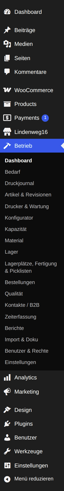
Was du nicht siehst, darfst du nicht. Fehlt dir ein Menüpunkt aus deiner Anleitung, fehlt dir das passende Recht. Das ist kein Defekt, sondern eine Einstellung – frag die Person, die im Plugin Vollzugriff hat.
3 Fünf Sätze, die für alle gelten
- Nichts wird gelöscht, alles wird korrigiert. Druckjobs, Lagerbewegungen und Chargen kannst du nicht wegradieren. Du stornierst sie mit einer Begründung, und beides bleibt stehen. So ist später nachvollziehbar, was wirklich passiert ist.
- Der Bestand ist die Summe aller Bewegungen. Es gibt kein Feld „Bestand“, das jemand von Hand verstellt. Stimmt eine Zahl nicht, fehlt eine Buchung – such die Buchung, nicht das Feld.
- Berechnetes wird nie gespeichert. Stückpreise, Herstellkosten, Maschinenstundensätze und Kennzahlen werden bei jedem Aufruf neu gerechnet. Ändert sich eine Grundlage, ändern sich alle Zahlen mit.
- Jede Eingabe wird geprüft. Wenn ein Formular meckert, hat es meistens recht. Lies die rote Meldung – sie steht in ganzen Sätzen da und sagt, was fehlt.
- Im Zweifel erfassen. Eine Buchung mit Bemerkung ist besser als keine Buchung. Eine fehlende Buchung fällt niemandem auf, eine falsche schon.
Produktion
Für alle, die drucken, entgraten, montieren und Teile ins Regal legen. Diese Anleitung setzt nichts voraus – außer dass du dich am Computer anmelden kannst.
A.1 Anmelden und das Menü finden
Alles, was du für die Produktion brauchst, liegt im Verwaltungsbereich der Website. Den erreichst du über den Browser – Chrome, Firefox, Safari, egal.
- Öffne den Browser und tippe oben in die Adresszeile die Adresse der Website, dahinter
/wp-admin. Also zum Beispiellindenweg16.de/wp-admin. Dann Enter. - Es erscheint eine Anmeldemaske mit zwei Feldern. Oben trägst du deinen Benutzernamen ein, darunter dein Passwort. Klick auf Anmelden.
- Setz vorher einen Haken bei Angemeldet bleiben, wenn du am eigenen Rechner sitzt. Dann musst du das nicht jeden Tag machen. An einem Rechner, an dem mehrere Leute arbeiten, lässt du den Haken weg.
- Jetzt siehst du links einen schwarzen Streifen mit Menüpunkten. Für die Werkstatt sind vor allem zwei davon wichtig: Fertigung (das Hammer-Symbol) und Lager (das Archiv-Symbol).
Wenn irgendwo steht:
Fertigung → Druckjournal
dann heißt das: Klicke links im schwarzen Menü auf Fertigung und danach auf den Unterpunkt Druckjournal. Das erste Wort ist immer eines der fünf Hauptmenüs (Verkauf, Fertigung, Lager, Finanzen, Verwaltung), das zweite der Unterpunkt darin.
Das ist Absicht. Je nach Rechteprofil blendet das Plugin aus, was du nicht brauchst. Mit dem Profil Werkstatt siehst du Dashboard, Druckjournal, Lager, Lagerplätze, Qualität und Zeiterfassung – genau das, was in dieser Anleitung in den Kapiteln 1 bis 7 und 11 steht. Der Rest ist für die Betriebsleitung.
A.2 Das Dashboard: der Blick am Morgen
Verkauf → Dashboard
Diese Seite ist dein Startpunkt. Sie beantwortet drei Fragen: Wie lief der Monat? Was ist gerade offen? Was braucht Aufmerksamkeit?
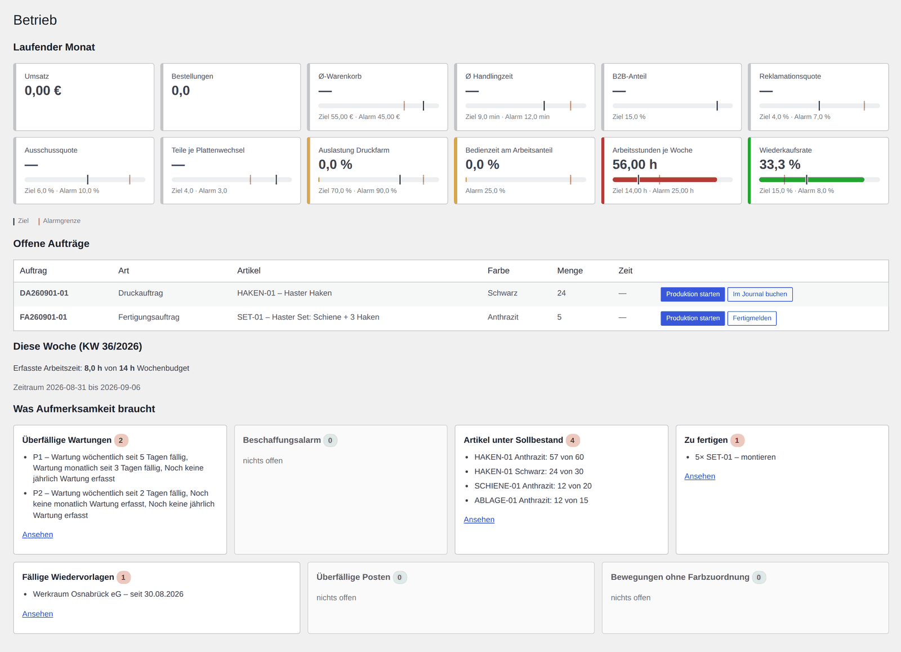
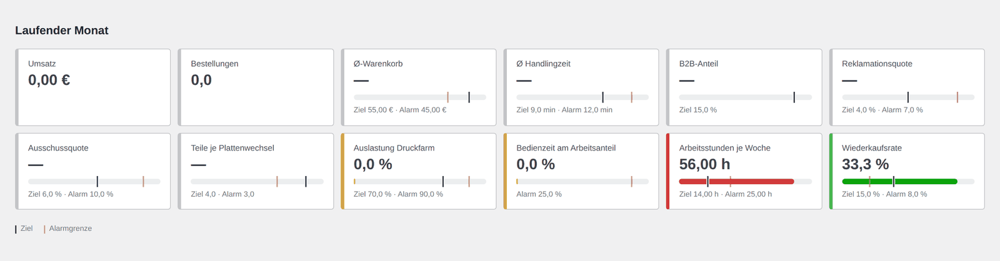
Darunter stehen die offenen Aufträge und deine Woche:
Ganz unten stehen Kästen mit Zahlen. Steht dort überall eine 0, ist nichts zu tun. Steht irgendwo eine andere Zahl, klick den Kasten an – er führt dich zu der Stelle, an der du das erledigst.
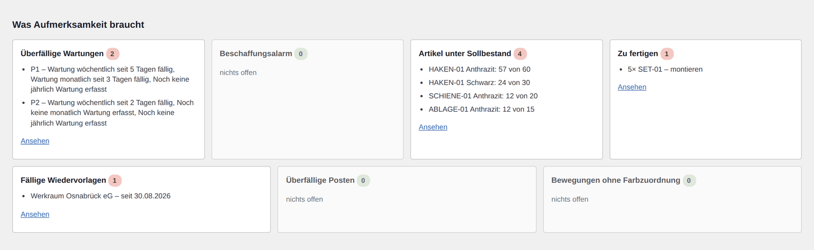
| Kasten | Was er bedeutet | Was du tust |
|---|---|---|
| Überfällige Wartungen | Ein Drucker hat seine Wartung überzogen | Kapitel A.9 |
| Beschaffungsalarm | Ein Kleinteil oder Filament reicht nicht mehr lange | Kapitel A.8, der Betriebsleitung sagen |
| Artikel unter Sollbestand | Von einem Artikel liegen weniger Stück im Regal als vereinbart | Kapitel A.3 und A.4 |
| Zu fertigen | Offene Aufträge, die noch niemand angefasst hat | Kapitel A.4 |
| Fällige Wiedervorlagen | Ein Händler wartet auf einen Rückruf | Betriebsleitung |
| Bewegungen ohne Farbzuordnung | Eine Lagerbuchung ohne erkennbare Farbe | Kapitel A.12 |
A.3 Bedarf: was heute entstehen muss
Lager → Bedarf
Diese Seite rechnet dir aus, was fehlt. Sie schaut sich an, was bestellt ist, welcher Sollbestand vereinbart wurde, was im Regal liegt und was schon in Arbeit ist – und sagt dir dann, was übrig bleibt.
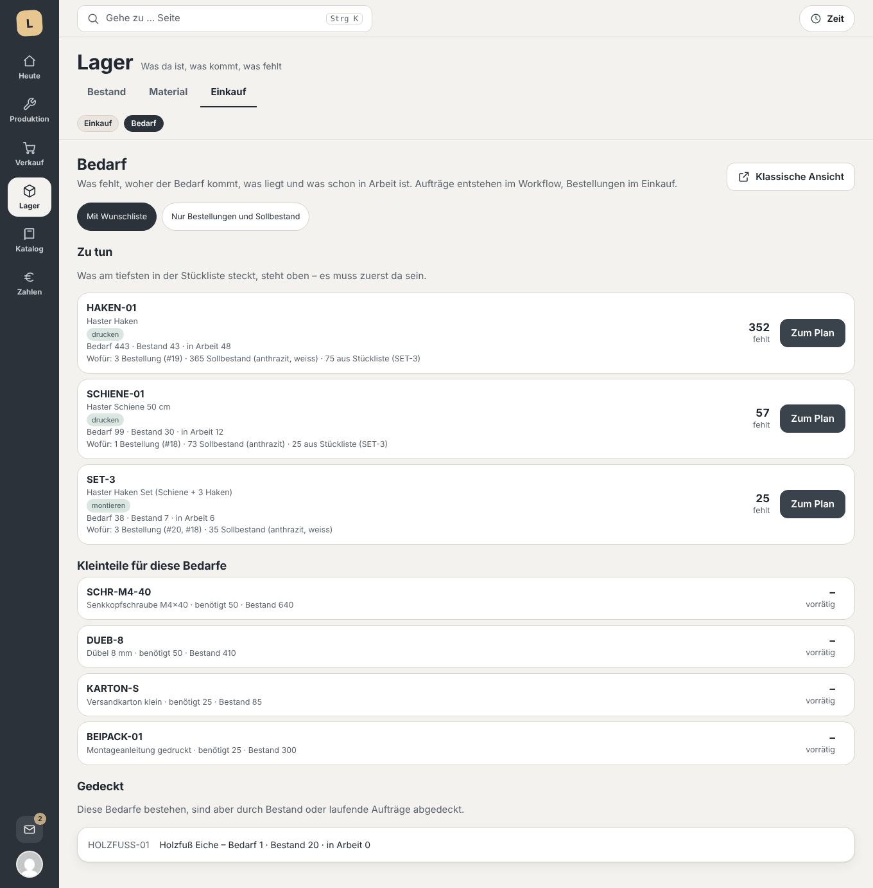
Abschnitt „Zu tun“
Hier steht in einer Zeile alles, was du wissen musst:
| Spalte | Bedeutung |
|---|---|
| Was | Die Art der Arbeit: drucken, montieren oder bestellen |
| Artikel | Artikelnummer und Bezeichnung |
| Bedarf | Wie viele Stück insgesamt gebraucht werden |
| Bestand | Wie viele davon schon im Regal liegen |
| In Arbeit | Wie viele in laufenden Aufträgen stecken |
| Fehlt | Die Zahl, die zählt: so viele musst du machen |
| Wofür | Woher der Bedarf kommt – Bestellnummer oder Sollbestand |
Arbeite von oben nach unten ab. Was am tiefsten in der Stückliste steckt, steht oben. Ein Set kannst du erst montieren, wenn die Haken gedruckt sind – deshalb stehen die Haken über dem Set.
Abschnitt „Produktionsplan“
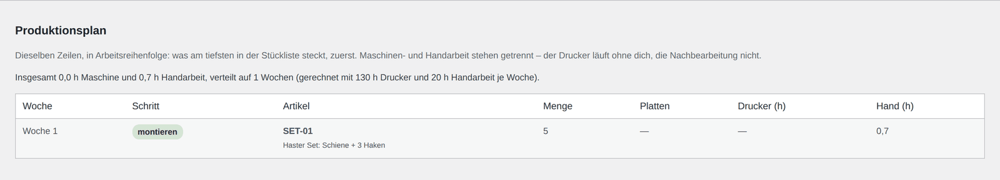
Abschnitt „Kleinteile für diese Bedarfe“
Hier siehst du, ob Schrauben, Dübel, Kartons und Beipackzettel für die geplante Arbeit reichen. Steht in der Spalte Fehlt überall eine 0, ist alles da. Steht dort eine Zahl, sag der Betriebsleitung Bescheid, bevor du anfängst – sonst stehst du mittendrin ohne Schrauben.
Abschnitt „Gedeckt“
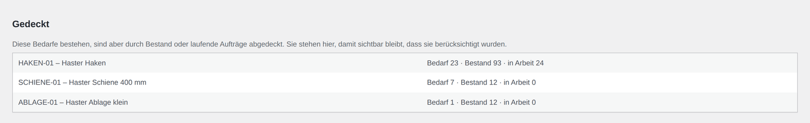
A.4 Einen Auftrag anlegen und starten
Lager → Lagerplätze, Fertigung & Picklisten → Reiter „Fertigungsaufträge“
Ein Auftrag ist ein Zettel im System: „Von diesem Artikel sollen so viele Stück in dieser Farbe entstehen.“ Es gibt zwei Sorten:
| Sorte | Wofür | Kürzel |
|---|---|---|
| Druckauftrag | Etwas, das aus dem Drucker kommt – ein Haken, eine Schiene | DA… |
| Fertigungsauftrag | Etwas, das aus vorhandenen Teilen zusammengebaut wird – ein Set | FA… |
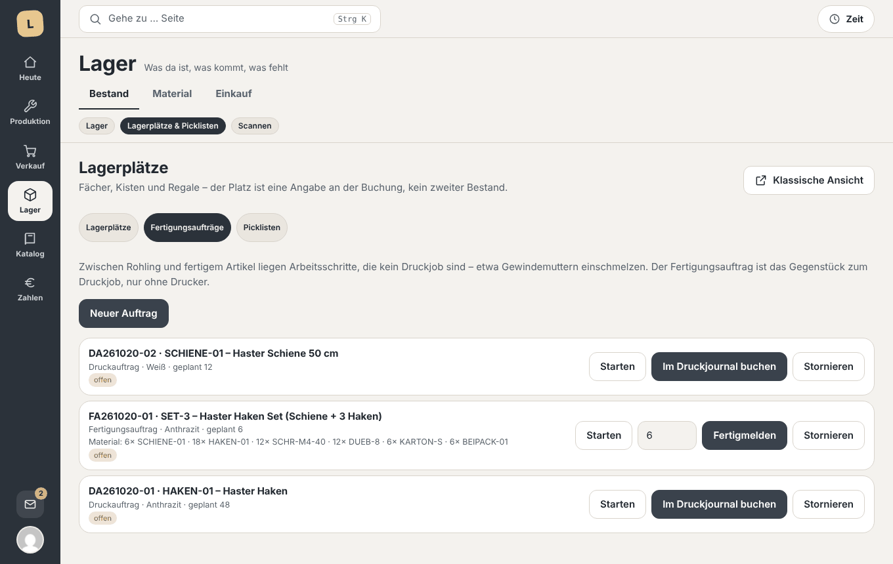
So legst du einen Auftrag an
- Wähle im ersten Auswahlfeld Druckauftrag oder Fertigungsauftrag.
- Wähle im zweiten Feld den Artikel. Es stehen nur Artikel zur Auswahl, die zu der gewählten Sorte passen – ein Set kannst du nicht drucken, einen Rohling nicht montieren.
- Trag im Feld Stück die Menge ein. Nimm die Zahl aus der Spalte Fehlt der Bedarfsseite.
- Wähle die Farbe.
- Klick auf Auftrag anlegen.
Beim Fertigungsauftrag rechnet das System sofort die Materialliste aus und zeigt sie in der Spalte Material an: 5× SCHIENE-01 · 15× HAKEN-01 · 20× SCHR-M4-40 …. Das ist genau das, was du aus dem Regal holen musst. Gebucht wird davon noch nichts – das passiert erst beim Fertigmelden.
Produktion starten – und warum das wichtig ist
Klick beim Auftrag auf Produktion starten. Damit passiert dreierlei:
- Der Auftrag wechselt von offen auf läuft – jeder sieht, dass daran gearbeitet wird.
- Die Uhr am Auftrag läuft mit. Aus ihr entstehen später die Ist-Zeiten und die Lohnkosten je Auftrag.
- Die Menge zählt auf der Bedarfsseite als in Arbeit und wird nicht doppelt eingeplant.
Musst du zwischendurch etwas anderes tun, klick auf Pause. Die Uhr hält an und läuft beim nächsten Start weiter. Die Zeit summiert sich – sie fängt nicht von vorn an.
A.5 Drucken und den Druckjob buchen
Fertigung → Druckjournal
Das Druckjournal ist das Herz der Produktion. Jeder Druck, der fertig ist, wird hier eingetragen. Aus diesem einen Formular entstehen automatisch:
- der Lagerzugang über die guten Teile,
- eine Charge für die Rückverfolgung,
- der Filamentverbrauch,
- der Verbrauch der eingebauten Kleinteile,
- die Betriebsstunden des Druckers,
- die Ausschussquote in den Kennzahlen.
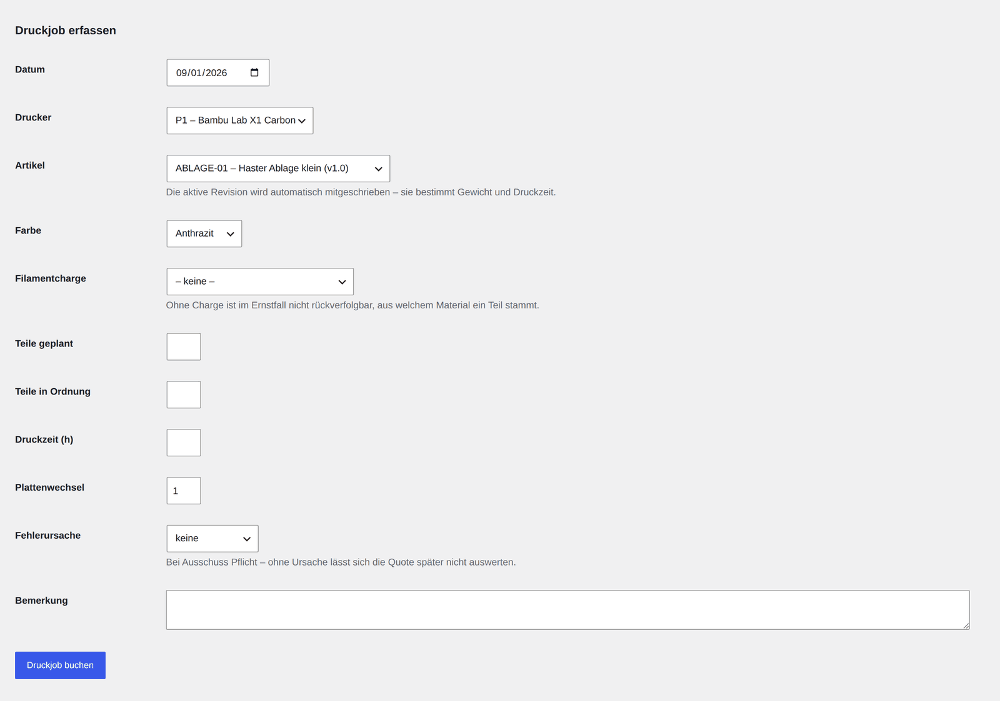
Feld für Feld:
| Feld | Was du einträgst | Warum |
|---|---|---|
| Datum | Steht schon auf heute. Nur ändern, wenn du etwas von gestern nachträgst. | Bestimmt die Kalenderwoche in den Auswertungen |
| Drucker | Das Gerät, auf dem gedruckt wurde | Zählt die Betriebsstunden und den Maschinenstundensatz |
| Artikel | Was gedruckt wurde. In Klammern steht die aktive Revision, z. B. (v1.1) | Aus der Revision kommen Gewicht und Druckzeit je Teil |
| Farbe | Die Farbe des Filaments | Bestand wird je Farbe geführt |
| Filamentcharge | Die Rolle, von der du gedruckt hast | Nur damit ist im Ernstfall nachvollziehbar, aus welchem Material ein Teil ist |
| Teile geplant | Wie viele auf der Platte waren | Grundlage der Ausschussquote |
| Teile in Ordnung | Wie viele brauchbar sind | Nur diese gehen in den Bestand |
| Druckzeit (h) | Die Zeit, die der Drucker angezeigt hat, in Stunden mit Komma – 6,9 für 6 Stunden 54 Minuten | Maschinenkosten und Auslastung |
| Plattenwechsel | Wie oft du die Platte gewechselt hast. Meist 1. | Kennzahl „Teile je Plattenwechsel“ |
| Fehlerursache | Nur nötig, wenn Teile kaputt sind | Ohne Ursache lässt sich Ausschuss später nicht auswerten |
| Bemerkung | Freitext, alles was auffiel | Hilft dem nächsten, der dasselbe Problem hat |
- Fülle die Felder aus – von oben nach unten.
- Sind alle Teile in Ordnung, trag bei Teile geplant und Teile in Ordnung dieselbe Zahl ein und lass die Fehlerursache auf keine.
- Sind Teile kaputt, trag bei in Ordnung die kleinere Zahl ein und wähle eine Fehlerursache. Ohne Ursache nimmt das Formular die Eingabe nicht an.
- Klick auf Druckjob buchen.
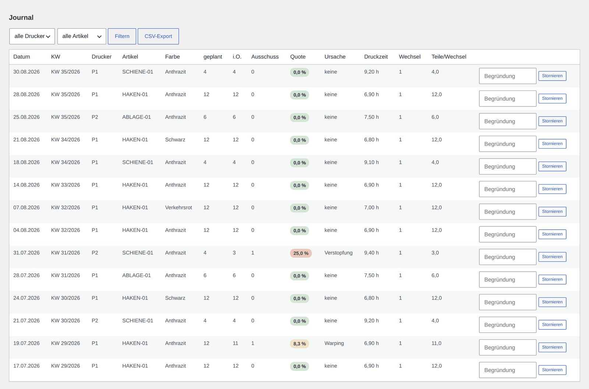
Es gibt keinen Löschknopf, und das ist Absicht. Trag rechts in der Zeile bei Begründung ein, was falsch war (zum Beispiel „Stückzahl vertippt, waren 12 statt 21“), und klick dann auf Stornieren. Die alte Zeile bleibt stehen, eine Gegenbuchung hebt sie auf, und du buchst danach neu. Damit ist die Bestandsrechnung wieder richtig und man sieht trotzdem, was passiert ist.
A.6 Am Drucker mit dem Handy buchen
Am Gerät steht selten ein Computer. Deshalb gibt es eine eigene, sehr kurze Seite fürs Handy.
Wie du sie öffnest
- Am schnellsten: Am Drucker klebt ein Aufkleber mit QR-Code. Handykamera drauf halten, auf den Hinweis tippen – die Seite öffnet sich mit dem richtigen Drucker schon eingestellt.
- Ohne Aufkleber: Am Computer auf Fertigung → Druckjournal gehen und oben auf Mobile Schnellerfassung öffnen klicken. Die Adresse einmal als Lesezeichen aufs Handy legen.
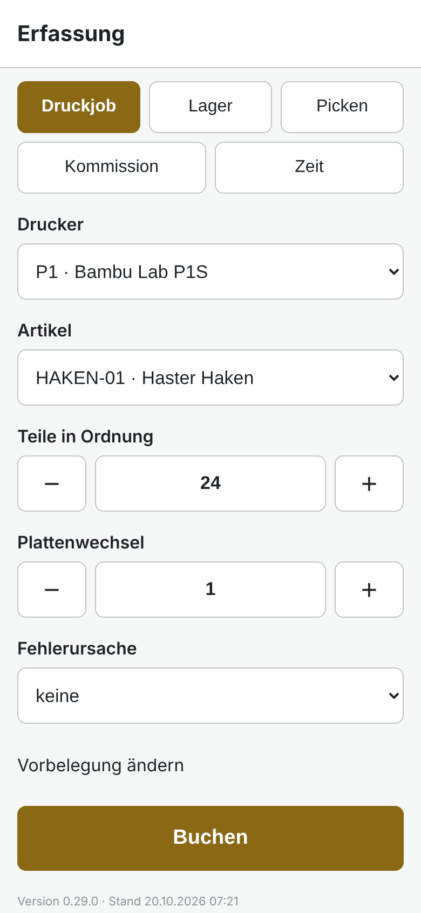
- Der Reiter Druckjob ist schon offen.
- Drucker und Artikel sind vorbelegt – meistens stimmt es schon. Wenn nicht, tipp drauf und ändere es.
- Stell mit − und + ein, wie viele Teile in Ordnung sind.
- Nur wenn etwas kaputt ist: Fehlerursache auswählen.
- Tipp auf den großen Knopf Buchen. Fertig.
Unter dem Formular steht dieser Link. Damit stellst du dauerhaft ein, welcher Drucker, welcher Artikel und welche Menge beim Öffnen schon eingetragen sind. Wenn du drei Wochen lang dasselbe druckst, sparst du dir damit jedes Mal vier Tipper.
A.7 Montieren und fertigmelden
Ein Set kommt nicht aus dem Drucker – es wird aus Teilen zusammengebaut, die schon im Regal liegen. Der Ablauf:
- Auf Lager → Lagerplätze, Fertigung & Picklisten → Fertigungsaufträge den Auftrag suchen.
- In der Spalte Material steht, was du brauchst. Hol es aus dem Regal. Die Lagerplätze stehen auf den Etiketten am Fach.
- Auf Produktion starten klicken, damit die Uhr läuft.
- Zusammenbauen.
- Im kleinen Zahlenfeld eintragen, wie viele Stück wirklich fertig geworden sind – normalerweise steht dort schon die geplante Menge.
- Auf Fertigmelden klicken.
Mit dem Fertigmelden bucht das System in einem Rutsch: das verbaute Material geht ab, die fertigen Sets kommen zu, die gestoppte Zeit wird dem Auftrag zugeschrieben.
Trag die wirkliche Menge ein, nicht die geplante. Der Auftrag bleibt dann mit dem Rest offen, und der Bedarf zeigt weiterhin an, was fehlt. Wer die Sollmenge einträgt, um „den Haken zu setzen“, erzeugt Bestand, der nicht existiert – und der fällt erst beim Packen auf, wenn der Kunde schon wartet.
A.8 Material: Filament und Kleinteile
Lager → Material
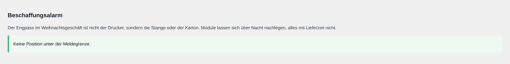
Eine neue Filamentrolle einbuchen
Jede Rolle, die ins Haus kommt, wird einmal erfasst. Danach kannst du sie beim Druckjob auswählen.
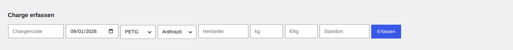
- Chargencode: Denk dir eine kurze, eindeutige Kennung aus und schreib sie mit einem Stift auf die Rolle. Bewährt hat sich
MATERIAL-FARBE-JAHR NUMMER, also zum BeispielPETG-ANT-2601. Zweimal derselbe Code geht nicht. - Zugang am: Das Datum, an dem die Rolle angekommen ist.
- Material, Hersteller, Farbe: Vom Etikett der Rolle abschreiben.
- Kilogramm: Was auf der Rolle drauf war, meist
1oder0,75. - Preis je kg: Was sie gekostet hat, netto. Daraus rechnet die Kalkulation die Materialkosten je Teil.
- Getrocknet am: Nur ausfüllen, wenn du sie getrocknet hast.
- Auf Erfassen klicken.
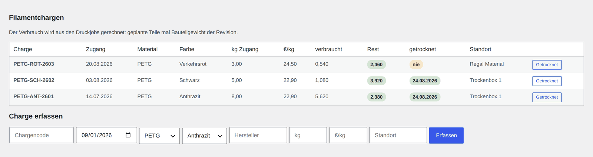
Wenn ein Kunde reklamiert, ist die erste Frage: aus welchem Material war das Teil? Über die Charge findest du in zwei Klicks alle Teile derselben Rolle und alle Bestellungen, in denen sie steckten (Kapitel A.13). Ohne Charge ist diese Frage nicht mehr zu beantworten.
Kleinteile und Verbrauchsmaterial
Weiter unten stehen Kartons, Holzwolle, Klebeband und Ähnliches. Diese Positionen werden pauschal je Bestellung abgebucht. Wenn ein Vorrat zur Neige geht, meldet sich der Beschaffungsalarm oben von selbst.
A.9 Drucker und Wartung
Fertigung → 3D-Drucker & Wartung
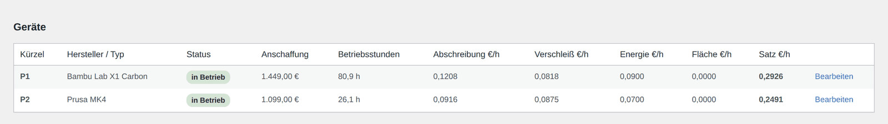
Eine Wartung erfassen
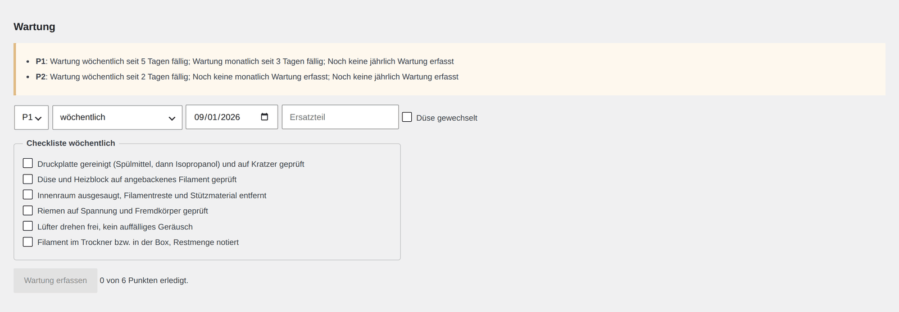
- Wähle das Gerät.
- Wähle das Intervall: wöchentlich, monatlich, jährlich, Verschleiß oder Saison.
- Jetzt erscheint die passende Checkliste. Arbeite sie am Gerät ab und hak jeden Punkt an, den du wirklich gemacht hast.
- Wenn du ein Teil getauscht hast, trag es bei Ersatzteil ein.
- Beim Düsenwechsel setz zusätzlich den Haken Düse gewechselt – damit merkt sich das Gerät seinen Zählerstand.
- Auf Wartung erfassen klicken.
Wöchentlich, monatlich und jährlich nimmt das Formular nur an, wenn jeder Punkt gehakt ist – und es sagt dir namentlich, welche fehlen. Das ist kein Schikane-Formular: Die Liste ist der Nachweis, dass die Wartung wirklich stattgefunden hat. Bist du noch nicht fertig, mach erst die Arbeit und trag danach ein. Für eine Reparatur zwischendurch nimmst du Verschleiß – dort ist keine Liste vorgeschrieben, dafür gehören Ersatzteil und Notiz ausgefüllt.
Die längeren Intervalle enthalten die kürzeren: Wer monatlich wartet, saugt vorher aus. Deshalb wird bei „monatlich“ auch die Wochenliste mit abgefragt.
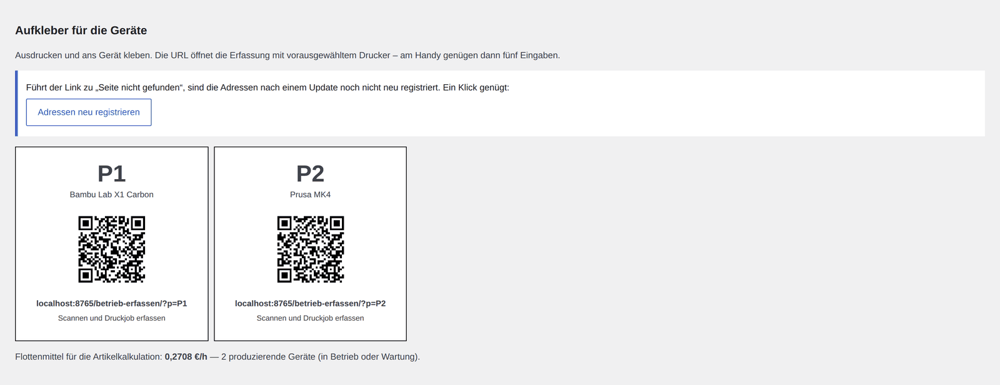
Über den Aufklebern steht Aufkleber als PDF für den Etikettendrucker. Der Knopf erzeugt dieselben Aufkleber im Rollenformat DK-11201 – dasselbe, das auch Lagerplätze und Artikel benutzen, damit im Brother nur eine Rolle liegen muss. Die Kacheln darunter bleiben für den Fall, dass du sie lieber auf Papier ausdruckst und aufklebst.
A.10 Bambu-Lab-Drucker: aus dem System heraus drucken
Fertigung → Bambu-Lab-Drucker · Fertigung → Druckfarm · Lager → Bedarf
Bis hierher war der Drucker ein Gerät, dessen Ergebnis du nachträglich ins Druckjournal einträgst. Ein Bambu-Lab-Drucker im LAN-Modus kann mehr: Das System schickt ihm die Druckdatei, startet den Druck, sieht Fortschritt und Restzeit und trägt am Ende die tatsächliche Druckzeit selbst ein. Dafür läuft im Betrieb ein kleiner Vermittler auf einem Raspberry Pi, die Bambu-Bridge – eingerichtet hat sie die Verwaltung (Kapitel D.15). Für dich zählt nur, was auf der Seite passiert.
Die Druckerkarte lesen
Im Reiter Drucker hat jeder Bambu-Drucker eine Karte. Sie aktualisiert sich von allein alle paar Sekunden.
| Zeile | Bedeutung |
|---|---|
| Bridge-Status | Online heißt: Der Pi meldet sich regelmäßig. Offline heißt: seit einigen Minuten kein Kontakt – Pi aus, Netz weg oder Dienst gestoppt. Dann passiert gar nichts, auch kein Druck. |
| Drucker-Status | bereit, druckt, bereitet vor, pausiert, fertig oder Fehler. Steht dort Drucker nicht erreichbar, läuft die Bridge, findet aber den Drucker im Netz nicht: Gerät aus, andere IP-Adresse oder falscher Zugangscode. |
| Temperaturen, Restzeit | Düse und Bett live; bei laufendem Druck die Restzeit in Minuten. |
| AMS-Filamente | Was in den Fächern des AMS liegt – Material, Farbe, Restmenge. Nur, wenn ein AMS angeschlossen ist. |
| Kamera-Standbild | Ein Bild alle paar Sekunden, kein Video. Gibt es nur bei der X1-Serie; bei P1 und A1 bleibt das Feld leer. |
| Wartende Aufträge | Wie viele Druckdateien in der Warteschlange dieses Druckers liegen. |
Dieselben Karten ohne Formulare drumherum zeigt Fertigung → Druckfarm – gedacht für einen Bildschirm in der Werkstatt, auf dem alle Drucker nebeneinander zu sehen sind.
Einen Druckauftrag einreihen
Reiter Aufträge. Es gibt zwei Wege, und beide brauchen eine geslicte Druckdatei (.gcode.3mf aus Bambu Studio oder OrcaSlicer) – eine reine Projektdatei mit Modell kann der Drucker nicht ausführen.
- Hochladen & einreihen: Drucker wählen, Datei auswählen, einreihen. Für alles, was du gerade eben am Rechner gesliced hast.
- Aus der Modellablage einreihen: Hier stehen alle Artikel, an deren aktiver Revision eine geslicte Druckdatei hängt (Kapitel A.11, Reiter Revisionen). Artikel wählen, Drucker wählen, einreihen – ohne dass eine Datei durch deinen Rechner muss.
- Meldet der Drucker eine AMS-Belegung, erscheint zusätzlich die Auswahl welches Filament. Sie gilt für die ganze Platte, ein Material. Ohne Auswahl druckt das Gerät mit dem gerade eingelegten Filament.
Die Bridge holt den Auftrag beim nächsten Kontakt ab, überträgt die Datei und startet den Druck. In der Liste wandert er durch die Stationen Wartend → Geclaimt → Wird übertragen → Druckt → Fertig. Fehler heißt: Der Drucker hat abgebrochen oder ist nicht angelaufen; Storniert heißt: jemand hat ihn zurückgezogen.
Ist ein Bambu-Auftrag aus einem Fertigungsauftrag entstanden (etwa über Direkt drucken, siehe unten), bucht ein fertiger Druck seine tatsächliche Druckzeit von selbst ins Druckjournal und schließt den Fertigungsauftrag. Die Handarbeit danach – Stützen entfernen, entgraten, verpacken – bleibt deine Eingabe; die kann kein Drucker wissen.
„Direkt drucken“ von der Bedarfsseite
Auf Lager → Bedarf steht bei jeder Druckposition neben Druckauftrag anlegen auch Direkt drucken, sobald ein Bambu-Drucker angelegt ist. Du wählst Drucker und Menge; das System rundet auf ganze Platten auf, legt je Platte einen Druckauftrag an und reiht je Platte eine Druckdatei ein. Ein fehlgeschlagener Druck blockiert so nicht die ganze Menge, und die Druckzeit landet sauber bei der richtigen Platte.
Direkt drucken geht nur für Artikel, deren aktive Revision eine geslicte Druckdatei trägt. Hängt dort nur die Projektdatei, fehlt der Knopf – dann ist die Plattenanordnung im nächsten Abschnitt dein Weg.
Platte anordnen: mehrere Teile automatisch auf ein Bett
Reiter Platte anordnen. Statt in Bambu Studio von Hand Teile zu verschieben, sagst du dem System, welche Artikel in welcher Menge auf welchen Drucker sollen. Es ordnet die Teile anhand ihrer echten Umrisse auf dem Druckbett an – nicht nur nach dem Begrenzungsrechteck – und erzeugt daraus eine oder mehrere Platten, jede als noch ungeslicte Projektdatei.
- Drucker wählen. Sein Druckbettmaß bestimmt, wie viel auf eine Platte passt; steht dort Bettmaß unbekannt, muss die Verwaltung es beim Drucker eintragen.
- Den Sicherheitsabstand zwischen den Teilen prüfen – 5 mm sind voreingestellt.
- Bei jedem gewünschten Artikel die Menge eintragen. Es stehen nur Artikel zur Wahl, an deren aktiver Revision eine ungeslicte Projekt-3MF hängt.
- Auf Automatisch anordnen klicken. Unten erscheinen die neuen Platten mit Status Entworfen.
Jede Platte hat zwei Knöpfe:
| Knopf | Was passiert |
|---|---|
| Projekt-3MF | Lädt die angeordnete Platte herunter. Du öffnest sie in Bambu Studio, slicest wie gewohnt und reihst die fertige Druckdatei im Reiter Aufträge ein. Der Weg ohne Slicing-Worker. |
| Automatisch slicen | Übergibt die Platte an den Slicing-Worker, einen Rechner im Betrieb, auf dem OrcaSlicer ohne Bildschirm läuft (Kapitel D.15). Er slicet mit den hinterlegten Profilen und legt die fertige Druckdatei von selbst in die Warteschlange des Druckers. |
Der Status der Platte sagt dir, wo sie steht:
| Status | Bedeutung | Was du tust |
|---|---|---|
| Entworfen | Angeordnet, noch nicht gesliced | Herunterladen oder automatisch slicen lassen |
| Wird gesliced – „wartet seit … auf den Slicing-Worker“ | Der Auftrag liegt bereit, aber kein Worker hat ihn abgeholt | Nach ein paar Minuten: der Verwaltung sagen, dass der Worker nicht läuft |
| Wird gesliced – „Worker hat die Platte um … übernommen“ | Der Slicer arbeitet; eine volle Platte kann einige Minuten dauern | Warten |
| Gesliced – „in der Bambu-Warteschlange“ | Fertig; die Druckdatei steht im Reiter Aufträge | Nichts – der Drucker holt sie |
| Fehlgeschlagen | Der Slicer hat abgebrochen. Der Grund steht in rot direkt unter dem Status – ein Klartext plus Fehlercode | Grund lesen, Ursache beheben oder weitergeben, dann Erneut slicen. Die Platte muss nicht neu angeordnet werden. |
Die Anordnung nimmt das Material des ersten Artikels auf der Platte und sucht dazu das passende Slicing-Profil. Mehrfarbige oder Mehrmaterial-Platten mit AMS-Zuordnung je Bauteil kann der Worker nicht – dafür bleibt Bambu Studio zuständig: Projekt-3MF herunterladen, von Hand slicen, hochladen.
A.11 Artikel, Revisionen und Stücklisten
Fertigung → Artikel & Revisionen
Dieser Bereich verlangt das Recht Stammdaten ändern (Profil Fertigung oder höher). Mit dem Profil Werkstatt siehst du den Menüpunkt nicht – dann überspring das Kapitel.
Die Seite hat oben Reiter. Der Reihe nach:
Reiter „Artikel“

| Beschaffungsweg | Bedeutung | Braucht |
|---|---|---|
| Druck | Kommt aus dem Drucker | eine Revision (Druckprofil) |
| Montage | Wird aus anderen Teilen gebaut | eine Stückliste |
| Zukauf | Wird fertig eingekauft | Beschaffungsdaten (Lieferant, Preis) |
| Hybrid | Teils gedruckt, teils zugekauft | beides |
Reiter „Revisionen“ – das Druckprofil
Eine Revision ist die Beschreibung, wie ein Teil gedruckt wird: Material, Düse, Schichthöhe, Füllung, Temperaturen, Teile je Platte, Druckzeit je Platte und Bauteilgewicht. Aus ihr rechnet das System Materialkosten und Druckzeit je Stück.
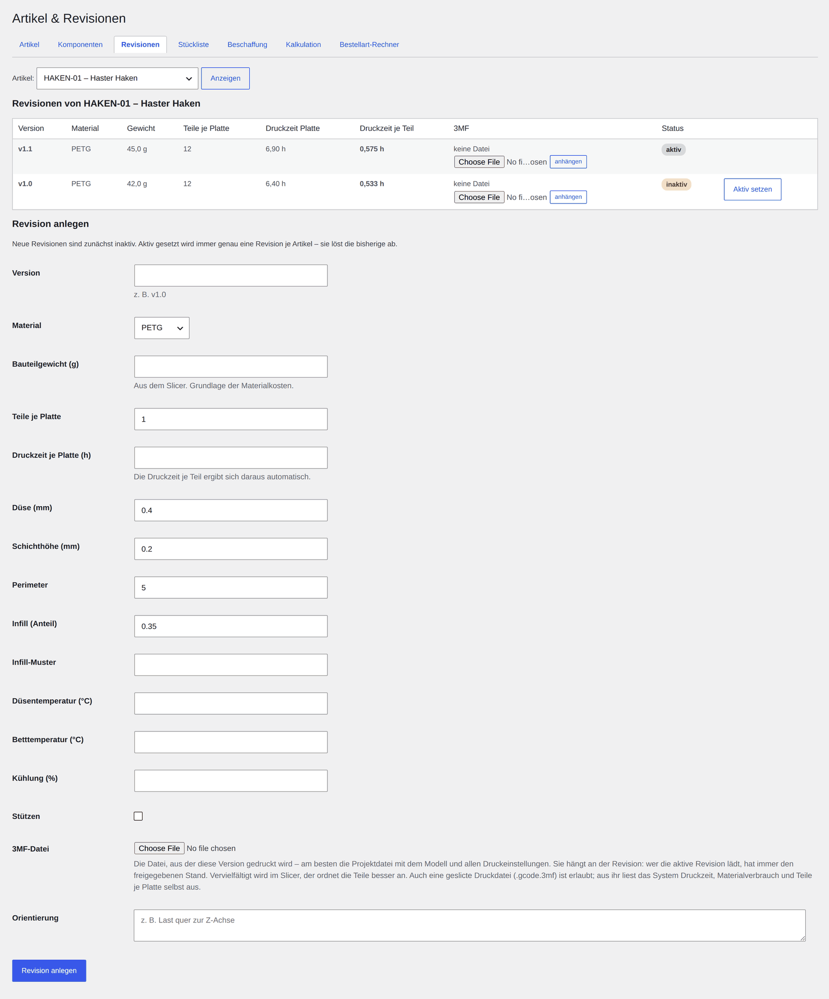
- Oben den Artikel auswählen und auf Anzeigen klicken.
- Runterscrollen zu Revision anlegen.
- Eine Version vergeben, zum Beispiel
v1.2. Zweimal dieselbe Version je Artikel geht nicht. - Die Druckeinstellungen eintragen, so wie sie im Slicer stehen.
- Teile je Platte, Druckzeit je Platte und Bauteilgewicht sind Pflicht – ohne sie kann nichts gerechnet werden.
- Speichern. Die neue Revision ist zunächst inaktiv.
- Erst wenn ein Probedruck in Ordnung war, klick bei ihr auf Aktiv setzen. Damit löst sie die bisherige ab.
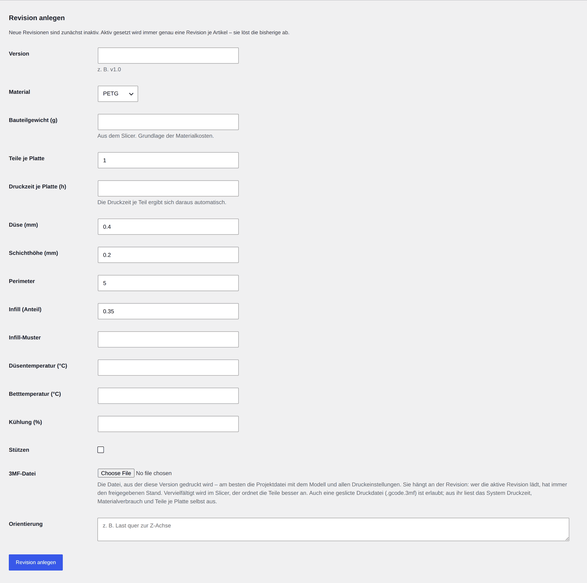
Reiter „Stückliste“
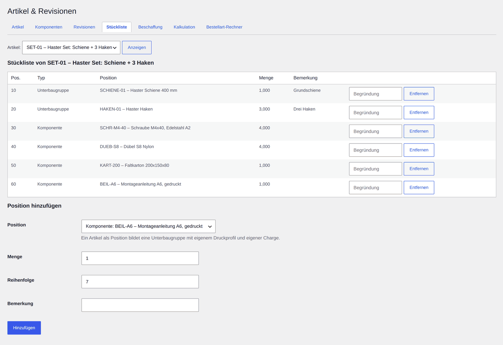
- Oben den Artikel wählen, zu dem die Stückliste gehört.
- Unter Position hinzufügen auswählen, ob es ein Artikel oder eine Komponente ist.
- Die Position und die Menge je Stück eintragen – also wie viele davon in ein fertiges Stück gehen.
- Auf Hinzufügen klicken.
Wenn du versuchst, das Set in die Stückliste des Sets zu legen, weist das System das ab. Das ist kein Fehler, sondern verhindert eine Rechnung, die nie zu Ende käme.
A.12 Lager: Bestand und Korrekturen
Lager → Lager
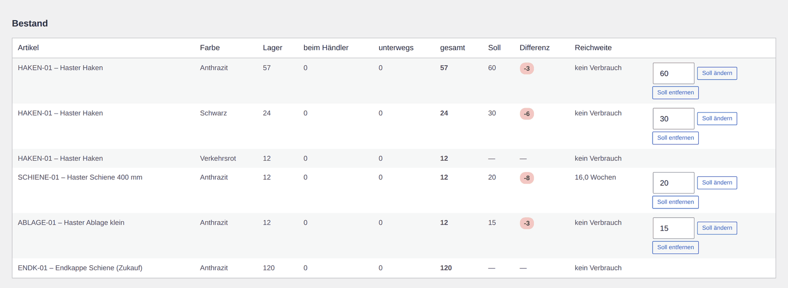
Jede Zahl hier ist die Summe aller Bewegungen zu diesem Artikel. Es gibt nichts, was man „verstellen“ könnte. Stimmt eine Zahl nicht, fehlt eine Buchung oder ist eine zu viel da – such nach der Bewegung, nicht nach einem Bestandsfeld.
Wenn die Zahl nicht stimmt: Korrekturbuchung
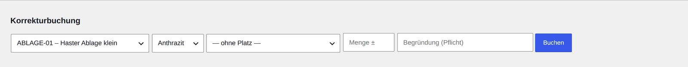
- Artikel und Farbe auswählen.
- Den Lagerplatz auswählen, wenn du ihn kennst.
- Bei Menge ± die Differenz eintragen, nicht den neuen Bestand. Liegen 18 Stück im Fach, das System sagt 20, dann trägst du
-2ein. - Eine Begründung eintragen. Die ist Pflicht. „Inventur Fach A-01-01“ oder „zwei Stück beim Entgraten gebrochen“ genügt völlig.
- Auf Buchen klicken.
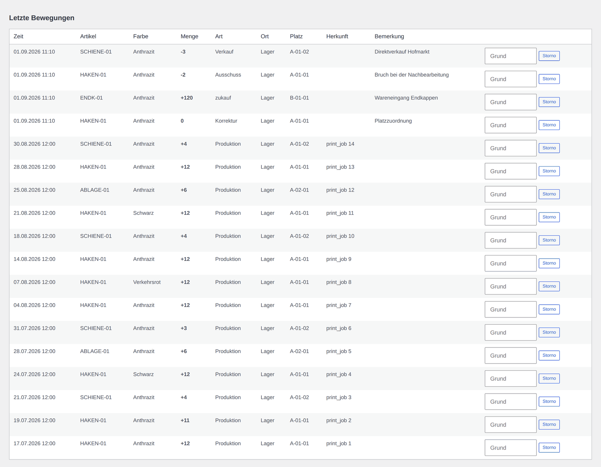
Lagerbuchung am Handy
Wareneingang, Umlagerung oder eine Korrektur direkt am Regal gehen auch am Handy: /betrieb-erfassen/ öffnen und oben auf den Reiter Lager tippen.
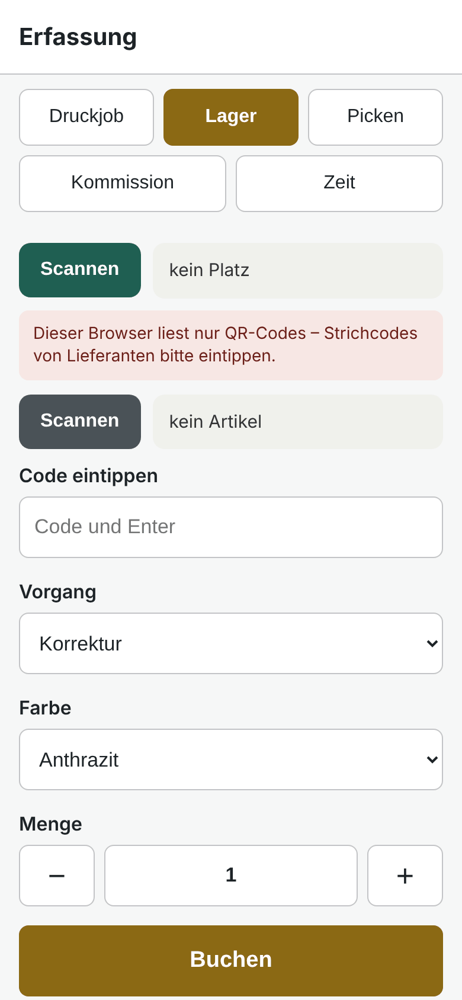
„Bewegungen ohne Farbzuordnung“
Steht diese Meldung auf der Seite, hat der Shop bei einer Bestellung keine Farbe mitgeliefert. Die Buchung ist trotzdem gemacht worden – sie hängt nur an keiner Farbe. Sag der Betriebsleitung Bescheid, damit das Farbattribut am Produkt ergänzt wird; anschließend lässt sich die Bewegung per Korrektur auf die richtige Farbe umbuchen.
A.13 Qualität: Chargen und Rückverfolgung
Fertigung → Qualität
Chargenbuch
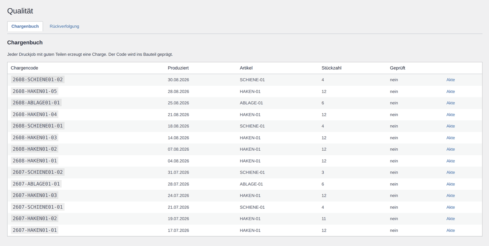
Klick auf eine Charge, um ihre Akte zu öffnen. Dort steht alles beisammen: Artikel, Revision, Filamentcharge, Drucker, Menge, Prüfung. Von dort kannst du den GPSR-Nachweis als PDF erzeugen – das Dokument, das du beiliegen lässt oder auf Nachfrage vorzeigst.
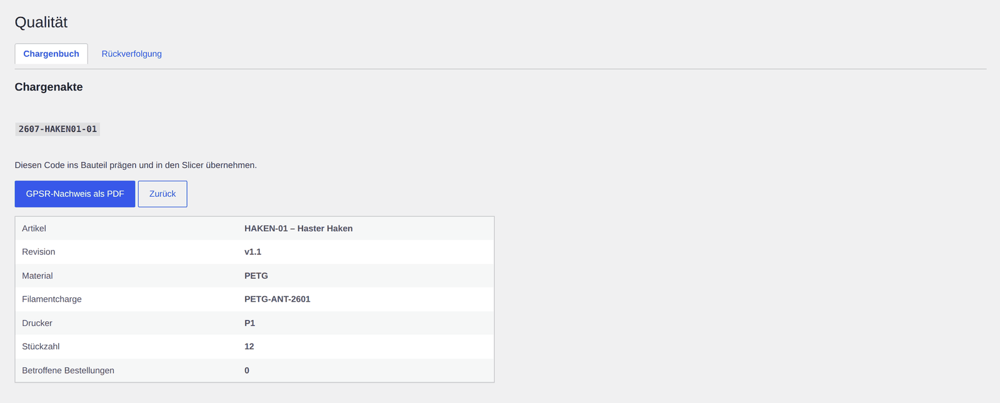
Rückverfolgung
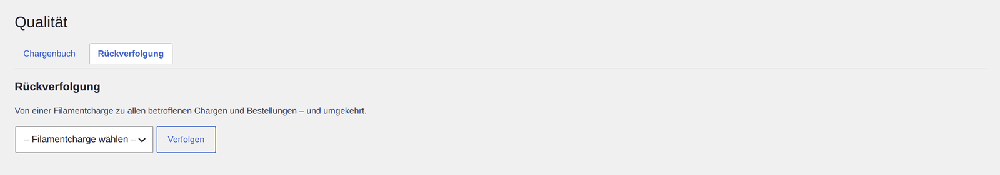
Das ist der Weg, wenn eine Rolle Material sich als schlecht herausstellt: Du siehst in einem Schritt, welche Kunden betroffen sind – und musst nicht raten.
A.14 Kapazität: schaffe ich das?
Fertigung → Kapazität
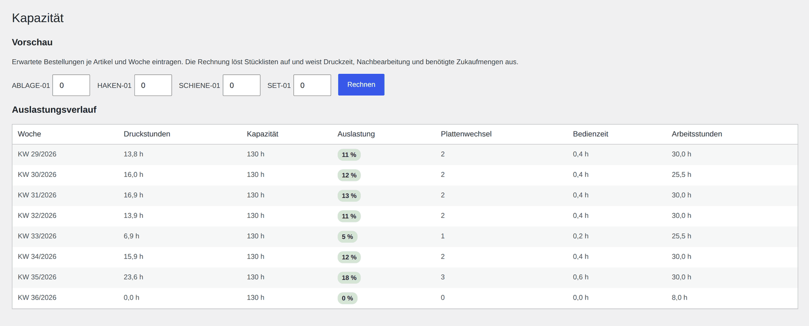
Das System löst die Stücklisten auf und sagt dir, wie viele Druckerstunden und wie viele Handstunden das kostet – und ob das in eine Woche passt. Nutz das vor Weihnachten oder vor einem Markt, bevor du zusagst.
A.15 Wenn etwas nicht geht
| Meldung oder Beobachtung | Was wirklich los ist | Was du tust |
|---|---|---|
| „Bei Ausschuss ist eine Fehlerursache Pflicht“ | Du hast weniger gute als geplante Teile eingetragen, aber keine Ursache gewählt | Fehlerursache auswählen, nochmal buchen |
| „Für diesen Artikel ist keine Revision hinterlegt“ | Der Artikel hat kein freigegebenes Druckprofil | Kapitel A.11 – oder die Betriebsleitung fragen |
| „Dieser Artikel wird nicht gedruckt“ | Du hast im Druckjournal ein Set oder einen Zukaufartikel gewählt | Sets über einen Fertigungsauftrag (Kapitel A.7) |
| „Die Wartung ist noch nicht vollständig“ | In der Checkliste fehlen Haken | Die genannten Punkte machen und abhaken |
| „Es können nicht mehr Teile gut sein als geplant waren“ | Zahlendreher in einem der beiden Felder | Beide Zahlen prüfen |
| „Der Chargencode ist bereits vergeben“ | Diesen Code gibt es schon | Laufende Nummer erhöhen |
| Ein Menüpunkt fehlt | Dein Rechteprofil deckt ihn nicht ab | Person mit Vollzugriff fragen |
| Der Bestand stimmt nicht mit dem Regal überein | Eine Buchung fehlt oder ist doppelt | Kapitel A.12, Korrekturbuchung mit Begründung |
| Eine Platte steht auf Wird gesliced und „wartet seit … auf den Slicing-Worker“ | Kein Worker holt den Auftrag ab | Nach ein paar Minuten der Verwaltung Bescheid sagen |
| Eine Platte steht auf Fehlgeschlagen | Der Slicer konnte sie nicht verarbeiten – der Grund steht unter dem Status | Grund lesen, weitergeben, dann Erneut slicen |
| Bei „Direkt drucken“ fehlt der Knopf | An der aktiven Revision hängt keine geslicte Druckdatei | Platte anordnen (Kapitel A.10) oder Druckdatei an die Revision hängen |
| Der QR-Aufkleber führt auf „Seite nicht gefunden“ | Die Adressen sind nach einem Update noch nicht neu registriert | Auf der Druckerseite auf Adressen neu registrieren klicken |
A.16 Spickzettel für den Tag
- Verkauf → Dashboard öffnen, die sechs Kästen unten anschauen.
- Lager → Bedarf öffnen, „Zu tun“ von oben nach unten lesen.
- Aufträge anlegen für das, was fehlt. Ersten Auftrag starten.
- Uhr in der schwarzen Leiste oben starten (Zeit starten).
- Jeder fertige Druck wird sofort gebucht – am Handy am Drucker, das dauert zwanzig Sekunden.
- Jedes montierte Los wird fertiggemeldet, bevor du zum nächsten gehst.
- Kaputte Teile buchst du als Ausschuss mit Ursache. Nicht heimlich in den Müll.
- Laufende Uhr stoppen und die Zeit erfassen (siehe Teil C, Personal).
- Offene Aufträge auf Pause stellen, wenn du morgen weiterarbeitest.
- Wochenwartung nicht vergessen – das Dashboard erinnert dich.
Versand
Für alle, die Pakete packen. Von der offenen Bestellung bis zum Paket in der Kiste für die Post – in einem durchgehenden Ablauf, Schritt für Schritt.
B.1 Der Ablauf auf einer Seite
Ein Paket entsteht immer in derselben Reihenfolge. Wenn du nur eine Sache aus dieser Anleitung behältst, dann diese fünf Schritte:
| # | Schritt | Wo | Ergebnis |
|---|---|---|---|
| 1 | Pickliste erzeugen | Computer, Reiter Picklisten | Eine Liste, sortiert nach Lagerplatz |
| 2 | Picken | Handy, Reiter Picken | Ware auf dem Packtisch, Bestand gebucht |
| 3 | Packen | Packtisch | Karton mit Ware und Beipackzettel |
| 4 | Lieferschein drucken | Computer, Seite Versand (Shop) oder Bestellungen | PDF, kommt ins Paket |
| 5 | Versandlabel | Computer, Verkauf → Versand | Paket ist adressiert und frankiert |
Die Pickliste ist nicht nach Bestellungen sortiert, sondern nach Lagerplatz. Du läufst einmal durchs Regal statt fünfmal. Erst am Packtisch wird die Ware wieder auf Bestellungen verteilt. Bei einer Bestellung merkt man den Unterschied nicht – bei zehn schon.
B.2 Anmelden und den Weg finden
- Browser öffnen, in der Adresszeile die Adresse der Website eintippen und
/wp-adminanhängen, also zum Beispiellindenweg16.de/wp-admin, dann Enter. - Benutzername und Passwort eintragen, auf Anmelden klicken.
- Links im schwarzen Menü siehst du fünf Einträge. Für den Versand brauchst du vor allem zwei davon: Lager (Archiv-Symbol) für die Picklisten und Verkauf (Laden-Symbol) für Bestellungen und den DHL-Versand.
Verkauf → Bestellungen heißt: links auf Verkauf klicken, dann auf Bestellungen. Das erste Wort ist immer eines der fünf Hauptmenüs (Verkauf, Fertigung, Lager, Finanzen, Verwaltung).
B.3 Schritt 1: Pickliste erzeugen
Lager → Lagerplätze, Fertigung & Picklisten → Reiter „Picklisten“
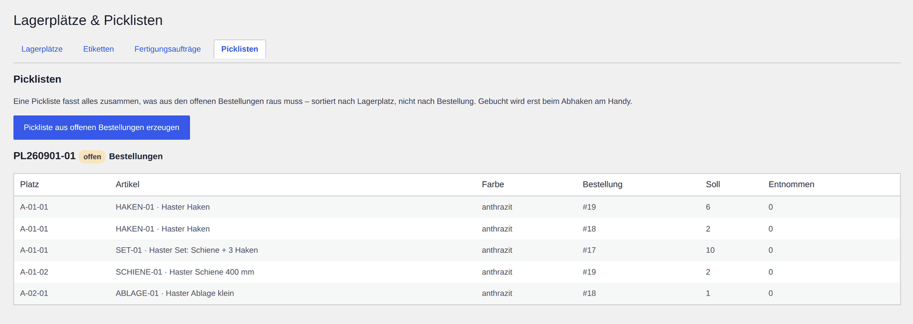
- Klick oben auf den blauen Knopf Pickliste aus offenen Bestellungen erzeugen.
- Darunter erscheint eine neue Liste mit einem Code wie
PL260901-01und dem Status offen. - Schau die Tabelle kurz an. Sie ist nach der Spalte Platz sortiert – das ist deine Laufreihenfolge.
| Spalte | Bedeutung |
|---|---|
| Platz | Das Fach, aus dem du greifst – der Code steht auf dem Etikett am Regal |
| Artikel | Artikelnummer und Bezeichnung; Kleinteil markiert Schrauben, Dübel und Ähnliches |
| Farbe | Die Farbe, die entnommen werden soll – nicht raten, es gibt mehrere |
| Bestellung | Zu welcher Shop-Bestellung diese Zeile gehört, z. B. #19 |
| Soll | Wie viele Stück |
| Entnommen | Wie viele du schon abgehakt hast. Startet bei 0. |
Die Liste enthält alle offenen Bestellungen. Wenn du sofort noch einmal auf den Knopf drückst, hast du zwei Listen mit derselben Ware und pickst am Ende doppelt. Eine Liste, ein Durchgang. Erst wenn sie abgearbeitet ist, machst du die nächste.
B.4 Schritt 2: Picken mit dem Handy
Zum Picken nimmst du das Handy mit ins Lager. Der Computer bleibt am Packtisch stehen.
Die Handy-Seite öffnen
- Wenn ein QR-Aufkleber am Regal oder am Packtisch klebt: Kamera drauf, auf den Hinweis tippen.
- Sonst: Die Adresse der Website plus
/betrieb-erfassen/eintippen. Leg sie dir einmal als Lesezeichen auf den Startbildschirm – dann ist sie ein Fingertipp entfernt.
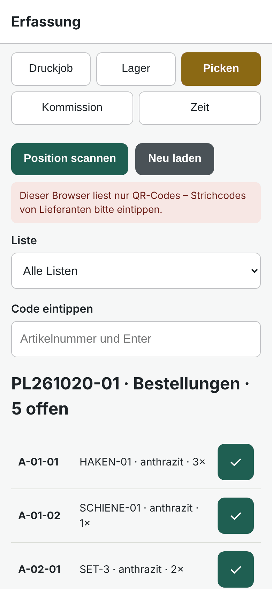
- Oben auf den Reiter Picken tippen.
- Unter der Überschrift steht der Code der Liste und wie viele Positionen noch offen sind, zum Beispiel
PL260901-01 · Bestellungen · 5 offen. - Geh zum ersten Platz in der Liste. Nimm die angegebene Menge in der angegebenen Farbe heraus.
- Tipp in der Zeile rechts auf den grünen Haken. Die Zeile ist damit erledigt und der Lagerabgang ist gebucht.
- Weiter zur nächsten Zeile, bis „0 offen“ dasteht.
Sicherer: scannen statt tippen
Statt auf den Haken zu tippen, kannst du auf Position scannen tippen und den QR-Code am Artikel oder am Fach mit der Kamera erfassen. Das System sucht sich die passende Zeile selbst und hakt sie ab. Vorteil: Du kannst nicht die falsche Zeile erwischen, weil du in der falschen Zeile geguckt hast.
Diese rote Meldung ist kein Fehler. Sie sagt: Die Kamera dieses Handys erkennt in dieser Ansicht nur QR-Codes, keine Strichcodes vom Lieferanten. Strichcodes tippst du bei Code eintippen ein und drückst Enter.
Wenn im Fach weniger liegt, als auf der Liste steht, nimm mit, was da ist, und sag es weiter. Der Bestand ist dann falsch und muss korrigiert werden – wie das geht, steht in Kapitel B.12. Wer stillschweigend weiterpickt, hinterlässt einen Fehler, der beim nächsten Mal wieder zuschlägt.
B.5 Schritt 3: Packen
Am Packtisch verteilst du die gepickte Ware auf die Bestellungen. Die Spalte Bestellung auf der Pickliste sagt dir, was zusammengehört.
- Karton in der passenden Größe nehmen.
- Ware der einen Bestellnummer hineinlegen und gegen die Liste prüfen: Menge und Farbe.
- Montageanleitung oder Beipackzettel dazulegen, wenn der Artikel einen hat.
- Lieferschein drucken (Kapitel B.6) und mit hineinlegen.
- Karton mit Füllmaterial auffüllen, sodass nichts wandert, und zukleben.
Du musst nicht eintragen, dass du einen Karton verbraucht hast. Verbrauchsmaterial wird je Bestellung pauschal abgezogen. Wenn der Vorrat knapp wird, meldet sich das System von selbst auf Lager → Material im Beschaffungsalarm.
B.6 Schritt 4: Lieferschein drucken
Verkauf → Bestellungen
- Such die Zeile mit der Bestellnummer, die du gerade gepackt hast. Sie steht in der Spalte Herkunft als
#18,#19und so weiter. - Klick rechts in der Zeile auf Lieferschein.
- Es öffnet sich ein PDF mit Lieferadresse und Artikelliste.
- Drucken mit Strg+P (am Mac Cmd+P) und ins Paket legen.
Auf dem Lieferschein stehen keine Preise – die Rechnung bekommt der Kunde getrennt. Das ist Absicht und richtig so, besonders wenn ein Paket als Geschenk geht.
Kommt die Bestellung aus dem Shop, hol dir den Lieferschein gleich unter Verkauf → Versand (Abschnitt 7). Dort steht er in derselben Zeile wie das Label – ein Weg statt zwei. Diese Liste hier ist für Bestellungen, die im Betrieb entstanden sind: Händler, Telefon, Markt.
Die Pickliste ist der Zettel fürs Lager: Artikel, Menge, Lagerplatz, keine Anschrift. Der Lieferschein liegt in der Kiste: Anschrift und Inhalt, keine Preise. Das Label klebt außen drauf – nur das kostet Geld.
Die Spalten der Bestellübersicht
| Spalte | Bedeutung |
|---|---|
| Herkunft | Die Nummer der Shop-Bestellung, oder „manuell“ bei Barverkauf |
| Typ | B2C = Endkunde, B2B = Händler |
| Kanal | Woher der Auftrag kam: Shop, Markt, Telefon … |
| Handling | Wie lange das Packen gedauert hat, in Minuten – trägst du selbst ein |
| Rechnung | Grün bezahlt, gelb offen, rot überfällig |
| Status | bestaetigt, entwurf oder storniert |
Die Minuten, die du hier einträgst, landen in der Kennzahl „Ø Handlingzeit“ auf dem Dashboard. Aus ihr wird sichtbar, welche Bestellart wirklich Arbeit macht – und daran hängt später der Preis. Eine grobe Schätzung ist besser als ein leeres Feld.
B.7 Schritt 5: Versandlabel
Verkauf → Versand
Eine Zeile je Shop-Bestellung, älteste zuerst – die, die am längsten wartet, steht oben. Oben drei Ansichten: Zu versenden, Versendet, Alle.
| Spalte | Was du damit machst |
|---|---|
| Bestellung | Nummer, Datum, Status. Der Klick führt zur Bestellung in WooCommerce. |
| Empfänger | Name und Zielort – zum Abgleich mit dem Paket vor dir. |
| Inhalt | Die Positionen in Kurzfassung. |
| Lieferschein | Drucken erzeugt das PDF frisch. Ins Paket legen. |
| Sendungsnummer | Steht nach dem Label von selbst da. Von Hand eintragen geht auch – du bleibst danach in der Liste. |
| Label | Produkt und Gewicht prüfen, Label erzeugen. |
Das DHL-Label erzeugen
- Produkt steht schon da: Inland Paket, EU Europaket, Rest der Welt Weltpaket – Leichtes als Warenpost, falls gebucht. Ändern kannst du es trotzdem.
- Gewicht steht in Gramm daneben, gerechnet aus den Artikelgewichten plus Verpackungszuschlag. Wieg im Zweifel nach und trag das echte Gewicht ein – ein zu leicht frankiertes Paket wird nachberechnet.
- Passt das Paket nicht aufs Band, den Haken bei Sperrgut setzen.
- Label erzeugen klicken. Das PDF öffnet sich über Label öffnen – ausdrucken, aufkleben, Paket in die Abholkiste.
Die Sendungsnummer geht im selben Moment in die Sendungsverfolgung: Der Kunde sieht sie in seinem Konto, ohne dass jemand sie abtippt.
Mit dem Klick ist die Sendung frankiert. Falsches Produkt, falsche Adresse, doppelt geklickt? Dann in derselben Zeile auf stornieren – solange die Sendung nicht abgeholt ist, wird sie nicht berechnet. Danach nicht mehr. Der Vorgang bleibt als storniert stehen, damit die Abrechnung der DHL nachvollziehbar bleibt.
Die Meldung sagt, woran es liegt. Steht dort etwas von Zugang abgewiesen, ist nicht das Paket schuld, sondern die Einstellung: Dann oben auf DHL-Zugang prüfen klicken – das kostet kein Label – und die Meldung an den weitergeben, der die Einstellungen pflegt. Steht dort etwas zu Adresse, Gewicht oder Abrechnungsnummer, ist die Sendung gemeint.
„DHL-Sandbox aktiv“ heißt: Das Label sieht echt aus, ist aber keine gültige Frankierung. Nicht aufkleben und wegschicken – Bescheid sagen, wer die Einstellungen pflegt.
„Noch kein DHL-Zugang hinterlegt“ heißt: Das Label muss woanders herkommen. Dann steht in der Spalte entweder ein Knopf zur Bestellung, wo ein Versandplugin frankiert, oder gar keiner – dann trägst du die Sendungsnummer von Hand ein, sobald du sie hast.
B.8 Bestellungen: die Übersicht
Verkauf → Bestellungen
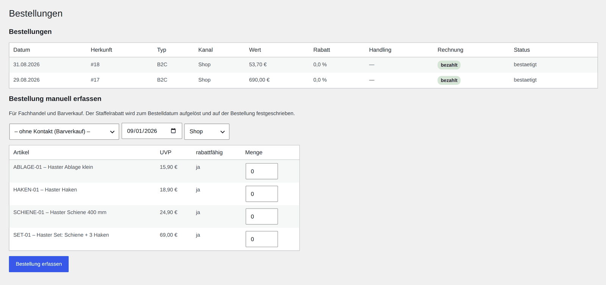
Zwei Abschnitte können oberhalb der Liste auftauchen. Beide sind Sonderfälle, nicht der Normalfall:
| Abschnitt | Was er bedeutet | Wer ihn erledigt |
|---|---|---|
| Ohne Shop-Bestellung | Zu dieser Zeile gibt es in WooCommerce keine Bestellung mehr – sie wurde dort gelöscht. Lagerabgang und Umsatz hängen aber noch daran. | Betriebsleitung: prüfen und ggf. stornieren |
| Anfragen zur Bestätigung | Ein Händler hat über seinen Nachbestell-Link bestellt. Erst mit deiner Bestätigung entstehen Lagerabgang und offener Posten. | siehe Kapitel B.10 |
B.9 Verkauf ohne Shop: manuell erfassen
Für Barverkauf am Markt, Abholung ab Werkstatt oder eine Bestellung, die per Telefon kam.
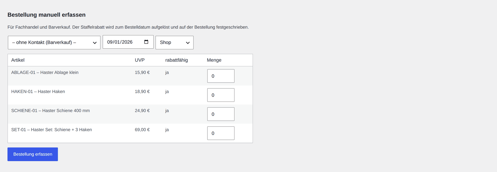
- Im ersten Feld den Kontakt wählen, wenn es ein Händler ist. Bei Barverkauf lässt du – ohne Kontakt (Barverkauf) – stehen.
- Datum prüfen – es steht auf heute.
- Kanal wählen: Shop, Markt, Telefon und so weiter. Das macht später die Marketing-Auswertung möglich.
- In der Artikelliste bei jedem verkauften Artikel die Menge eintragen. Was du nicht verkauft hast, bleibt auf 0.
- Auf Bestellung erfassen klicken.
Der Rabatt für Händler wird dabei automatisch aus der Rabattstaffel zum Bestelldatum aufgelöst und an der Bestellung festgeschrieben. Ändert sich die Staffel später, bleibt diese Bestellung, wie sie war.
Eine manuelle Bestellung bucht genauso Ware aus dem Lager wie eine Shop-Bestellung. Erfasse deshalb nur, was wirklich über den Tisch gegangen ist – und nicht zur Übung.
B.10 Nachbestellungen von Händlern bestätigen
Händler bekommen eine Karte mit QR-Code. Wer sie scannt, landet auf einer schlichten Seite, wählt Mengen und schickt sie ab. Bei uns erscheint das dann als Anfrage zur Bestätigung ganz oben auf der Bestellseite.
- Anfrage lesen: Wer, was, wie viel.
- Prüfen, ob die Ware da ist – notfalls unter Lager → Lager nachsehen.
- Auf Bestätigen klicken.
Erst mit dem Klick auf Bestätigen entstehen der Lagerabgang und der offene Posten. Vorher ist es nur eine Anfrage. Damit kann kein Händler versehentlich deinen Bestand leerbuchen.
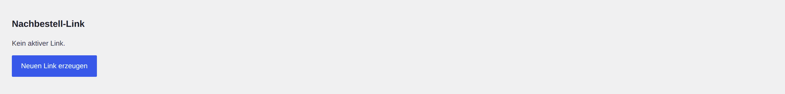
Gespeichert wird nur seine Prüfsumme, nicht der Link selbst. Druck die Karte also sofort aus oder gib die Adresse gleich weiter. Ist sie weg, erzeugst du einen neuen Link – der alte wird damit ungültig.
B.11 Lagerplätze und Etiketten
Lager → Lagerplätze, Fertigung & Picklisten → Reiter „Lagerplätze“
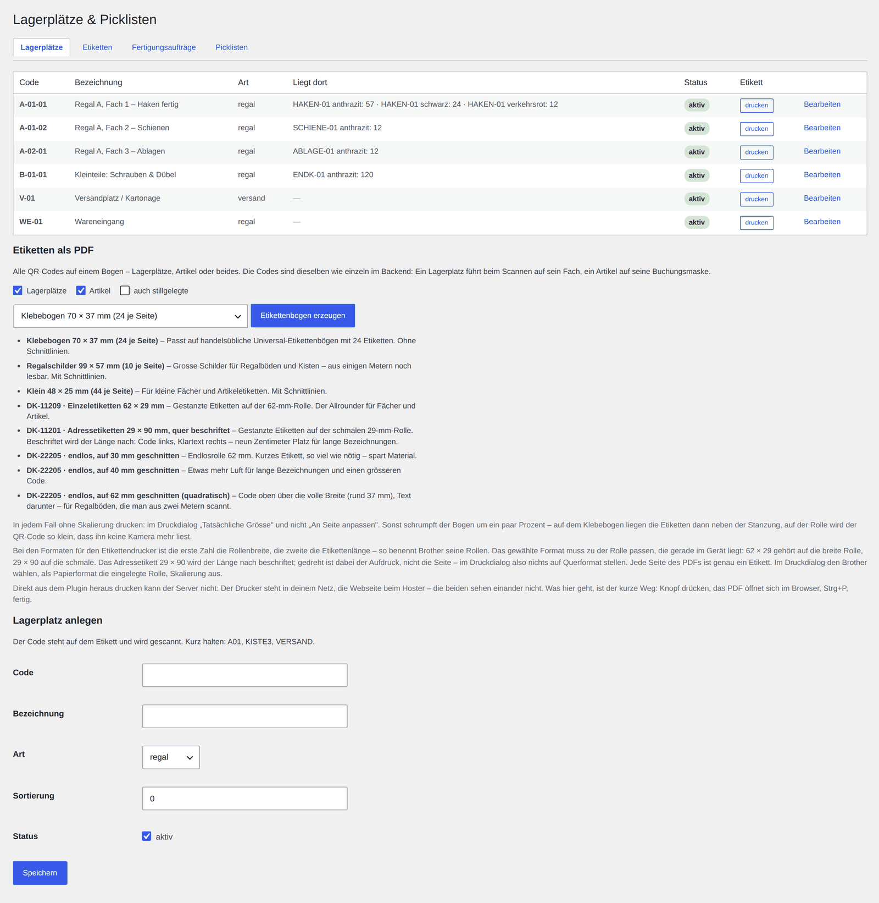
Einen neuen Platz anlegen
- Runterscrollen zu Lagerplatz anlegen.
- Code vergeben. Kurz halten, er kommt aufs Etikett:
A-01-01,V-01,WE-01. - Bezeichnung in Klartext: „Regal A, Fach 1 – Haken fertig“.
- Art wählen: Regal, Kiste, Fach, Palette, Werkbank oder Versand.
- Auf Speichern klicken, dann in der Zeile auf drucken – das Etikett kommt als PDF.
Alle Etiketten auf einmal
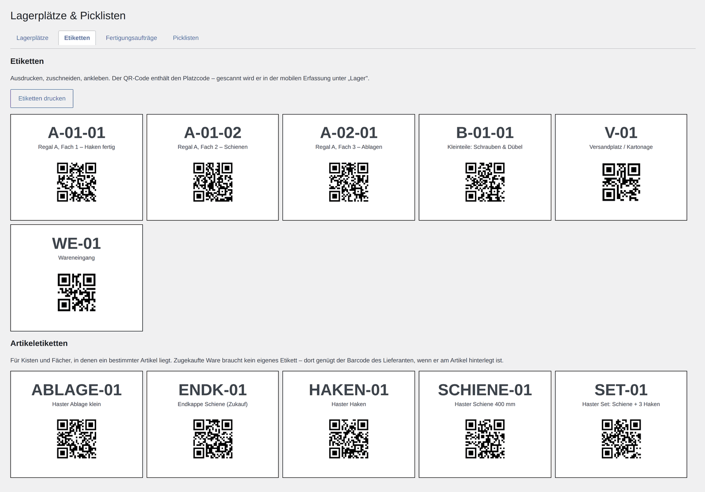
- Ankreuzen, was drauf soll: Lagerplätze, Artikel, Drucker oder mehreres davon.
- Das Format wählen, das zu deinem Papier oder deiner Etikettenrolle passt. Vorausgewählt ist DK-11201, das Format der schmalen Rolle.
- Auf Etikettenbogen erzeugen klicken – es öffnet sich ein PDF.
- Mit Strg+P drucken.
Lagerplätze, Artikel und Drucker benutzen dasselbe Rollenformat, damit im Brother nur eine Rolle liegen muss. DK-11201 ist 29 mm breit und 90 mm lang – die erste Zahl ist immer die Rollenbreite, so benennt Brother seine Rollen. Beschriftet wird der Länge nach: QR-Code links, Klartext rechts, neun Zentimeter Platz für lange Bezeichnungen.
Gedreht ist dabei der Aufdruck, nicht die Seite. Im Druckdialog also nichts auf Querformat stellen – jede Seite des PDFs ist bereits genau ein Etikett.
Liegt bei dir eine andere Rolle im Gerät, wähl das passende Format aus der Liste. Das gewählte Format muss zur eingelegten Rolle passen: 62 × 29 gehört auf die breite, 29 × 90 auf die schmale.
Sonst schrumpft der Bogen um ein paar Prozent. Auf dem Klebebogen liegen die Etiketten dann neben der Stanzung, und auf der Rolle wird der QR-Code so klein, dass keine Kamera ihn mehr liest.
B.12 Bestand prüfen und korrigieren
Lager → Lager
Wenn beim Picken im Fach weniger lag als auf der Liste:
- Runterscrollen zu Korrekturbuchung.
- Artikel, Farbe und Lagerplatz auswählen.
- Bei Menge ± die Differenz eintragen – lagen 18 statt 20 Stück da, trägst du
-2ein. - Eine Begründung eintragen, sie ist Pflicht: „Fach A-01-01 nachgezählt, zwei Stück fehlten“.
- Auf Buchen klicken.
B.13 Wenn etwas nicht geht
| Beobachtung | Was los ist | Was du tust |
|---|---|---|
| Die Pickliste ist leer | Es gibt keine offenen Bestellungen – oder sie wurden schon gepickt | Unter Bestellungen nachsehen |
| Eine Position hat keinen Platz („—“) | Dem Artikel ist noch kein Lagerplatz zugeordnet | Picken geht trotzdem; Zuordnung von der Betriebsleitung nachtragen lassen |
| Der Haken auf dem Handy reagiert nicht | Verbindung weg oder Liste veraltet | Auf Neu laden tippen |
| Der Scan erkennt den Code nicht | Etikett verschmutzt, zu klein gedruckt oder es ist ein Strichcode | Code bei Code eintippen von Hand eingeben |
| Zwei Picklisten mit derselben Ware | Der Erzeugen-Knopf wurde zweimal gedrückt | Nur eine abarbeiten, die andere liegenlassen und der Betriebsleitung melden |
| Der Lieferschein-Knopf fehlt | Die Zeile ist ein Entwurf oder gehört zu keiner Shop-Bestellung | Status in der Spalte Status prüfen |
| „Ohne Shop-Bestellung“ steht oben | Eine Bestellung wurde in WooCommerce gelöscht | Nicht selbst stornieren – der Betriebsleitung sagen |
| Der Menüpunkt Bestellungen fehlt | Dein Profil hat kein Recht auf Stammdaten | Person mit Vollzugriff fragen |
B.14 Spickzettel für den Packtisch
- Lager → Lagerplätze … → Picklisten → Pickliste erzeugen.
- Handy:
/betrieb-erfassen/→ Reiter Picken → Zeile für Zeile abhaken, bis „0 offen“. - Am Packtisch nach Bestellnummer sortieren und packen.
- Verkauf → Versand → je Bestellung Lieferschein drucken, ins Paket. (Bestellungen ohne Shop: Verkauf → Bestellungen.)
- Gleiche Zeile: Gewicht prüfen → Label erzeugen → Label öffnen → drucken, aufkleben.
- Handlingzeit je Bestellung eintragen.
Immer die Farbe auf der Liste prüfen – Anthrazit und Schwarz verwechselt man schneller, als man denkt.
Fehlbestand sofort korrigieren, nicht „nachher“.
Nichts abhaken, was nicht wirklich im Karton liegt.
Vor Label erzeugen das Gewicht anschauen – ab da ist das Paket frankiert.
Personal
Zwei Anleitungen in einer. Die Kapitel C.1 bis C.8 sind für alle, die ihre Arbeitszeit aufschreiben. Ab Kapitel C.9 geht es um Löhne, Rechte und Auswertungen – das braucht nur, wer Personal führt.
C.1 Warum überhaupt Zeit erfassen?
Nicht zur Kontrolle. Die erfasste Zeit hat drei ganz praktische Zwecke:
- Der Preis stimmt. In jedem Artikelpreis steckt Handarbeit. Wenn niemand aufschreibt, wie lange das Entgraten dauert, rechnet die Kalkulation mit einer Schätzung – und die ist meistens zu niedrig.
- Die Woche bleibt machbar. Es gibt ein Wochenbudget an Stunden. Nur wer erfasst, sieht rechtzeitig, dass es nicht reicht.
- Der Lohn ist nachvollziehbar. Aus Stunden mal Stundenlohn entstehen die Lohnkosten – ohne Excel-Zettel dazwischen.
Zeiterfassung kostet nur dann Nerven, wenn man sie am Monatsende rekonstruiert. Läuft die Uhr mit, sind es zwei Klicks – morgens starten, abends stoppen.
C.2 Anmelden und den Weg finden
- Browser öffnen, Adresse der Website plus
/wp-admineintippen, Enter. - Benutzername und Passwort eintragen, auf Anmelden klicken.
- Links im schwarzen Menü auf Verwaltung, dann auf Zeiterfassung klicken.
Verwaltung → Zeiterfassung
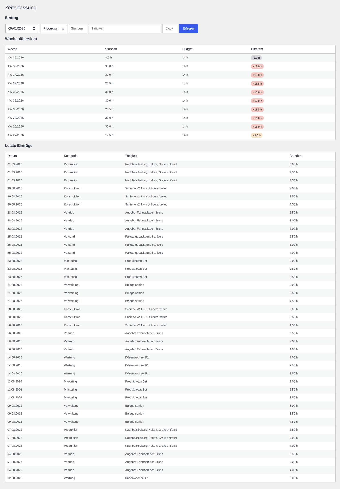
C.3 Die Stoppuhr: mitlaufen lassen
Ganz oben im Bildschirm läuft eine schwarze Leiste quer über die Seite. Dort steht ein Uhrensymbol mit der Beschriftung Zeit starten.
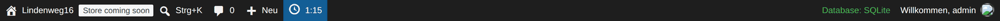
- Wenn du anfängst zu arbeiten: einmal auf Zeit starten klicken.
- Die Beschriftung wechselt und zeigt von da an die laufende Zeit.
- Jetzt arbeitest du ganz normal weiter. Die Uhr merkt sich nebenbei, auf welchen Seiten du warst.
Sie hängt an deinem Benutzerkonto, nicht am Browserfenster. Ein versehentlich geschlossener Tab kostet dich also nichts. Umgekehrt heißt das aber auch: Sie läuft nachts weiter, wenn du sie nicht stoppst – siehe nächstes Kapitel.
C.4 Die Uhr stoppen und buchen
Wenn du fertig bist, geh auf Verwaltung → Zeiterfassung. Ganz oben steht dann der Abschnitt Laufende Zeit.
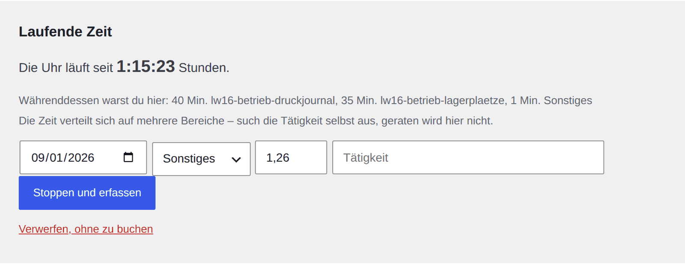
- Lies die Zeile „Währenddessen warst du hier: …“. Sie hilft dir, dich zu erinnern, was du gemacht hast.
- Wähle im Auswahlfeld die Kategorie, die am besten passt (Kapitel C.6 erklärt sie).
- Prüfe die vorgeschlagene Stundenzahl. Sie ist die volle Laufzeit. Hattest du zwischendurch Pause, trag die wirklich gearbeitete Zeit ein –
1,26heißt eine Stunde und knapp 16 Minuten. - Schreib bei Tätigkeit in ein paar Worten auf, was du getan hast: „Nachbearbeitung Haken, Grate entfernt“.
- Klick auf Stoppen und erfassen.
Steht dort eine sehr große Zahl, weist das System darauf hin, dass das nach einer vergessenen Uhr aussieht. Trag dann die tatsächlich gearbeitete Zeit ein, bevor du erfasst – überschreib die Vorgabe einfach. Läuft die Uhr weniger als eine Minute, war es vermutlich ein Fehlklick: Dann klick auf Verwerfen, ohne zu buchen.
C.5 Zeit von Hand nachtragen
Uhr vergessen? Kein Drama. Ganz oben auf der Zeitseite steht das Formular Eintrag – eine Zeile, fünf Felder.
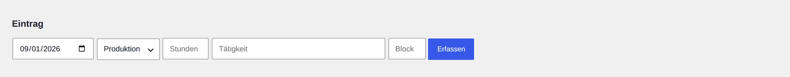
- Datum: Steht auf heute. Für gestern klickst du auf das kleine Kalendersymbol und wählst den Tag.
- Kategorie: Aus der Liste wählen.
- Stunden: Als Dezimalzahl mit Komma. Eine Dreiviertelstunde ist
0,75, zweieinhalb Stunden sind2,5. Nicht2:30. - Tätigkeit: Kurz beschreiben, was war.
- Block: Kann leer bleiben. Wer in festen Arbeitsblöcken plant, trägt hier die Blockbezeichnung ein.
- Auf Erfassen klicken.
15 Min = 0,25 · 20 Min = 0,33 · 30 Min = 0,5 · 45 Min = 0,75 · 50 Min = 0,83 · 1 Std 10 Min = 1,17
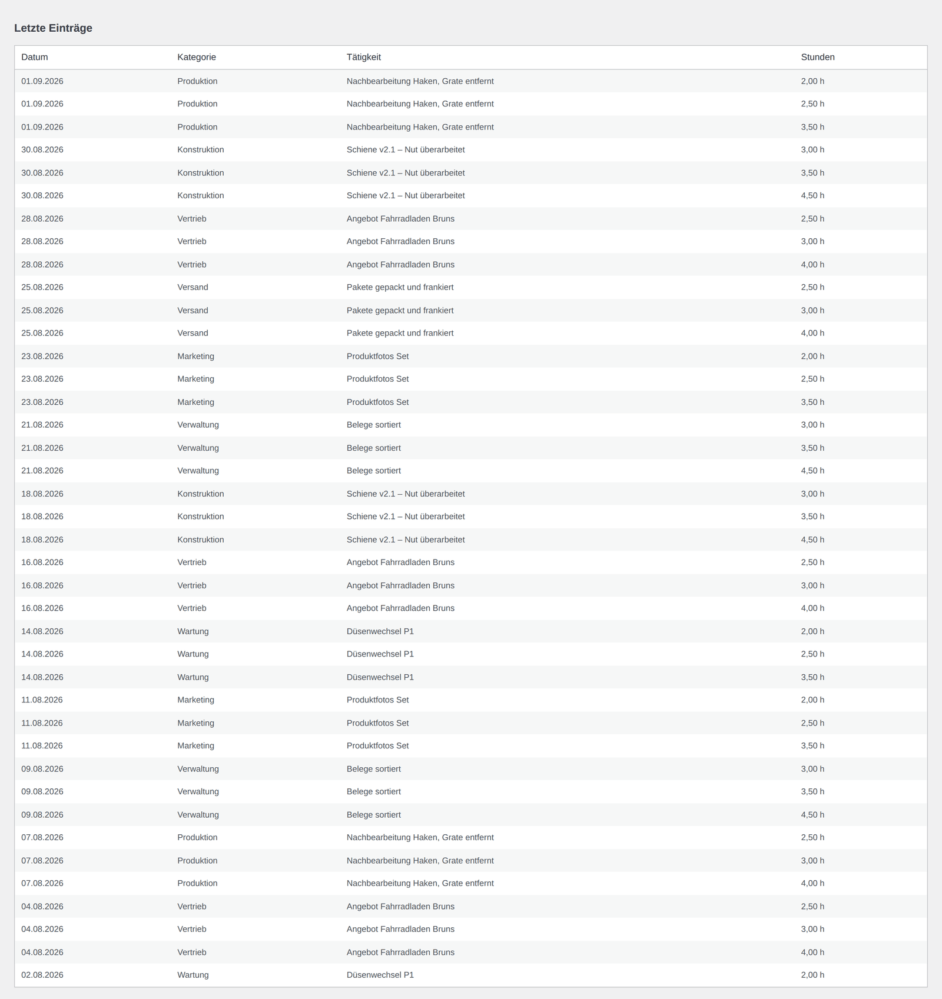
Die Wochenübersicht lesen
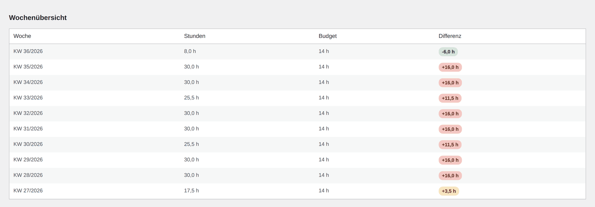
Das Budget ist keine Obergrenze, sondern eine Planungsgröße. Es zeigt, ob die Woche so gelaufen ist wie gedacht. Steht dort dauerhaft ein dickes Plus, stimmt entweder die Planung nicht – oder es ist wirklich zu viel Arbeit.
C.6 Die Kategorien richtig wählen
Es gibt acht Kategorien. Sie entscheiden, in welcher Auswertung deine Stunden landen. Nimm die, die den größten Teil der Zeit ausmacht – es muss nicht auf die Minute stimmen, aber es sollte nicht dauernd „Sonstiges“ sein.
| Kategorie | Beispiele |
|---|---|
| Produktion | Drucker bestücken, entgraten, montieren, Teile prüfen |
| Versand | Picken, packen, frankieren, zur Post fahren |
| Konstruktion | Modelle zeichnen, Revisionen anpassen, slicen, Probedrucke bewerten |
| Marketing | Produktfotos, Texte, Social Media, Messevorbereitung |
| Vertrieb | Händlergespräche, Angebote schreiben, Kundenanfragen |
| Verwaltung | Belege sortieren, Buchhaltung, Bestellungen beim Lieferanten |
| Wartung | Drucker reinigen, Düse wechseln, Reparaturen |
| Sonstiges | Alles, was in keine der obigen passt |
C.7 Zeit am Handy erfassen
Wer in der Werkstatt keinen Computer hat, erfasst am Handy. Öffne /betrieb-erfassen/ und tipp oben auf den Reiter Zeit.
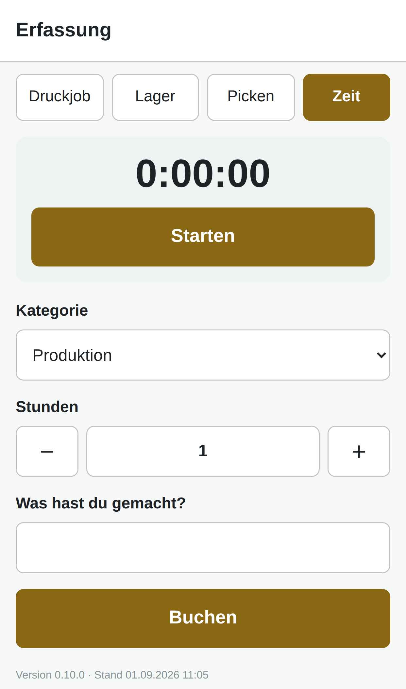
C.8 Zeit an einem Auftrag
Wenn du auf Lager → Lagerplätze, Fertigung & Picklisten → Fertigungsaufträge bei einem Auftrag auf Produktion starten klickst, läuft die Uhr an diesem Auftrag.
Der Vorteil: Die Zeit hängt dann nicht nur am Tag, sondern am konkreten Auftrag. Daraus entstehen die Ist-Lohnkosten je Auftrag – und damit die Antwort auf die Frage, ob ein Set beim aktuellen Preis überhaupt lohnt. Pausierst du den Auftrag, hält auch die Uhr an.
Die folgenden Kapitel setzen das Recht Rechte und Löhne vergeben voraus (Profil Vollzugriff). Ohne dieses Recht siehst du den Menüpunkt Benutzer & Rechte nicht – dann ist diese Anleitung für dich hier zu Ende.
C.9 Benutzer & Rechte: die Übersicht
Verwaltung → Benutzer & Rechte
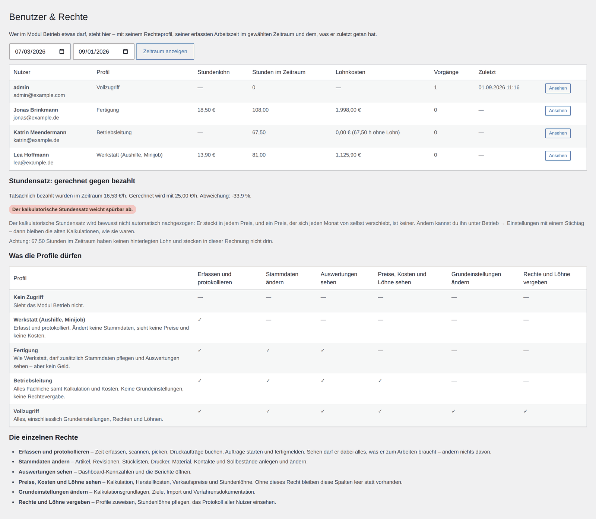
| Spalte | Bedeutung |
|---|---|
| Profil | Das Rechteprofil – siehe Kapitel C.10 |
| Stundenlohn | Der aktuell gültige Satz; „—“ heißt: keiner hinterlegt |
| Stunden im Zeitraum | Summe der erfassten Zeit im eingestellten Zeitraum |
| Lohnkosten | Stunden mal Lohn. Steht dort „(2,00 h ohne Lohn)“, sind unbewertete Stunden dabei. |
| Vorgänge | Wie viele protokollierte Aktionen im Zeitraum |
| Zuletzt | Wann diese Person zuletzt etwas im System getan hat |
C.10 Rechteprofile vergeben
Es gibt fünf Profile. Sie sind nicht nach Datenbanktabellen geschnitten, sondern danach, was jemand im Betrieb tut.
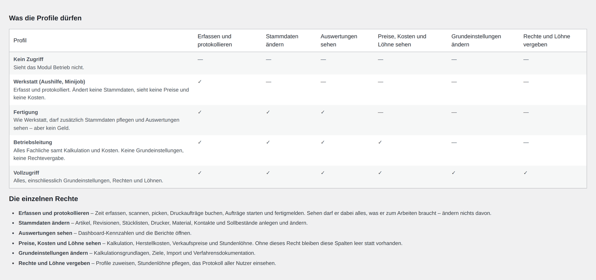
| Profil | Für wen | Sieht Preise und Löhne? |
|---|---|---|
| Kein Zugriff | Sieht das Modul Betrieb gar nicht | nein |
| Werkstatt | Aushilfe, Minijob – erfasst und protokolliert | nein |
| Fertigung | Wie Werkstatt, darf zusätzlich Stammdaten pflegen und Auswertungen sehen | nein |
| Betriebsleitung | Alles Fachliche samt Kalkulation und Kosten | ja |
| Vollzugriff | Zusätzlich Grundeinstellungen, Rechte und Löhne | ja |
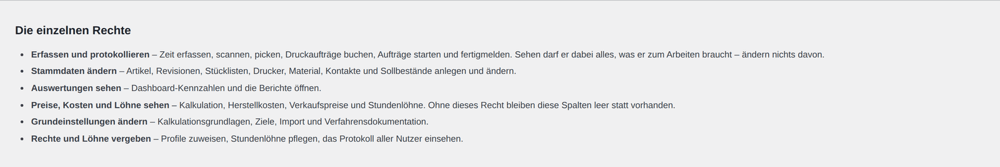
So weist du ein Profil zu
- In der Nutzerliste rechts in der Zeile auf Ansehen klicken.
- Auf der Detailseite zum Abschnitt Rechte scrollen.
- Im Auswahlfeld das passende Profil wählen.
- Auf Profil zuweisen klicken.
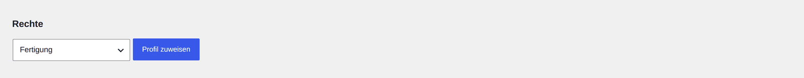
Du kannst dich nicht selbst aussperren. Bei deinem eigenen Konto steht statt des Auswahlfelds ein Hinweis – ändern kann deine Rechte nur eine andere Person mit Vollzugriff.
Administratoren behalten ohnehin vollen Zugriff. Wer die Website verwaltet, kommt über das WordPress-Recht an alles heran. Ein Profil hier ändert daran nichts, und das System sagt das auch offen.
Jemand kann gleichzeitig Redakteur des Shops und Aushilfe in der Werkstatt sein. Deshalb liegen die Betriebsrechte am Benutzerkonto und nicht an der Rolle – so überschreibt keins das andere.
C.11 Stundenlöhne pflegen
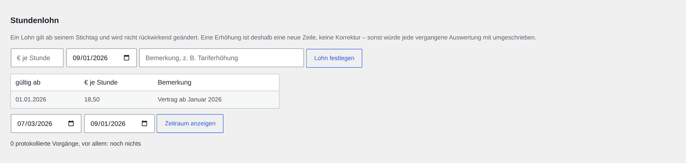
- Nutzer öffnen (Ansehen in der Liste).
- Zum Abschnitt Stundenlohn scrollen.
- Satz eintragen, zum Beispiel
14,50. - Gültig ab setzen – das Datum, ab dem der Satz gilt.
- Eine kurze Notiz ist hilfreich: „Erhöhung laut Vertrag vom 12.03.“
- Auf Lohn festlegen klicken.
Jede Erhöhung ist eine neue Zeile mit einem Stichtag, keine Korrektur der alten. Das ist wichtig: Stunden aus dem letzten Jahr bleiben mit dem damaligen Satz bewertet. Wer den alten Satz einfach ändern könnte, würde rückwirkend alle Auswertungen verbiegen.
Hat jemand keinen Lohn hinterlegt, erscheinen seine Stunden in den Auswertungen als unbewertet. Sie sind nicht verloren – sie zählen nur nicht in die Lohnkosten. Das System weist ausdrücklich darauf hin, damit nicht zu wenig herauskommt.
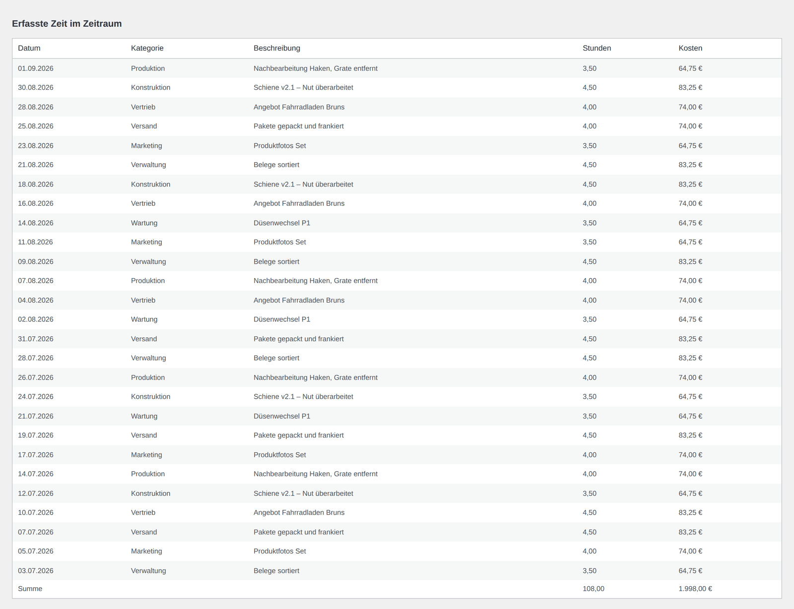
C.12 Das Protokoll eines Nutzers
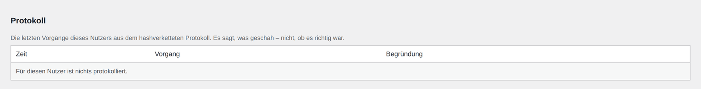
Das Protokoll hält fest, wer wann was geändert hat. Jeder Eintrag enthält die Prüfsumme seines Vorgängers – wird ein Datensatz nachträglich verändert, bricht die Kette und das fällt bei der Prüfung auf.
Es sagt, was geschah. Es sagt nicht, ob es richtig war. Nimm es als Werkzeug, um einen Fehler zurückzuverfolgen („wann ist der Bestand gekippt?“), nicht als Leistungsmessung. Für Letzteres taugt es nicht, und dafür ist es nicht gebaut.
C.13 Gerechnet gegen bezahlt
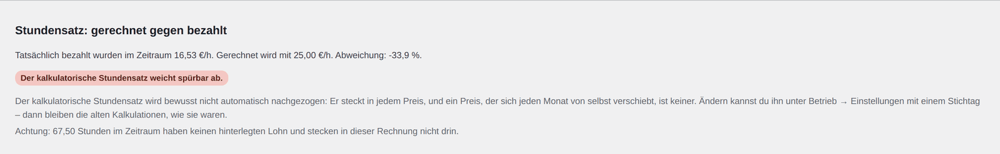
Zwei Zahlen stehen sich gegenüber:
- Tatsächlich bezahlt – Lohnkosten geteilt durch bewertete Stunden im Zeitraum.
- Gerechnet – der kalkulatorische Stundensatz, der in jeder Preiskalkulation steckt.
Weichen sie deutlich ab, erscheint ein roter Hinweis. Das ist kein Fehler, sondern eine Frage an dich: Ist der kalkulatorische Satz noch richtig?
Der kalkulatorische Satz steckt in jedem Preis. Ein Preis, der sich jeden Monat von selbst verschiebt, ist keiner. Ändern kannst du ihn bewusst unter Verwaltung → Einstellungen → Kalkulationsannahmen – mit einem Stichtag, sodass alte Kalkulationen bleiben, wie sie waren.
C.14 Einen neuen Mitarbeiter anlegen
Das läuft in zwei Schritten, weil zwei Systeme beteiligt sind: WordPress kennt das Benutzerkonto, das Plugin vergibt die Betriebsrechte.
- Konto anlegen: Links im schwarzen Menü auf Benutzer → Neu hinzufügen. Benutzername, Vor- und Nachname und E-Mail-Adresse eintragen. Als Rolle genügt Abonnent – die Betriebsrechte kommen im nächsten Schritt.
- Den Haken bei Benutzer benachrichtigen setzen, damit die Person eine Mail mit ihrem Zugang bekommt. Auf Neuen Benutzer hinzufügen klicken.
- Profil vergeben: Auf Verwaltung → Benutzer & Rechte gehen, die Person in der Liste suchen, auf Ansehen klicken und im Abschnitt Rechte das Profil zuweisen (Kapitel C.10).
- Stundenlohn eintragen, falls die Person bezahlt wird (Kapitel C.11).
- Der Person zeigen, wo die Uhr ist, und ihr diese Anleitung geben – Kapitel C.2 bis C.6 reichen für den Anfang.
Setz das Profil auf Kein Zugriff statt das Konto zu löschen. Erfasste Zeiten, Buchungen und Protokolleinträge bleiben so zuordenbar. Ein gelöschtes Konto hinterlässt Buchungen ohne Namen – und die Frage, wer das war, lässt sich dann nicht mehr beantworten.
C.15 Datenschutz: was hier steht und was nicht
- Erfasst werden Datum, Kategorie, Stundenzahl, eine kurze Tätigkeitsbeschreibung und – wenn die Uhr lief – die Bereiche, in denen gearbeitet wurde.
- Es gibt keine Tastenaufzeichnung, keine Bildschirmfotos, keine Standortdaten und keine Klickstrecken.
- Wer die Löhne und das Protokoll sehen darf, ist auf das Recht Rechte und Löhne vergeben beschränkt. Werkstatt und Fertigung sehen weder fremde Löhne noch fremde Protokolle.
- Für die Auswertung nach außen (Steuerberatung, Analyse) gibt es einen eigenen Export, der Namen von Geschäftskunden weglässt, solange man sie nicht ausdrücklich mitgibt.
C.16 Wenn etwas nicht geht
| Beobachtung | Was los ist | Was du tust |
|---|---|---|
| „Bitte eine Stundenzahl größer als 0 eintragen“ | Das Feld ist leer oder enthält eine 0 | Stunden als Dezimalzahl eintragen, z. B. 1,5 |
| „Mehr als 24 Stunden an einem Tag sind ein Tippfehler“ | Wahrscheinlich 7:30 statt 7,5 eingegeben | Als Dezimalzahl schreiben |
| Die Uhr lief über Nacht | Stoppen vergessen | Beim Stoppen die tatsächliche Zeit eintragen, nicht die Vorgabe |
| Ich sehe die Uhr nicht mehr | Die obere schwarze Leiste ist ausgeblendet | Im eigenen Profil unter Benutzer → Profil die Werkzeugleiste wieder einschalten |
| Lohnkosten stehen auf 0 € | Kein Stundenlohn hinterlegt | Kapitel C.11 |
| „… Stunden ohne hinterlegten Lohn“ | Ein Teil der Stunden fällt in eine Zeit vor dem ersten Lohnstichtag | Lohn mit früherem Stichtag nachtragen |
| Ein Nutzer taucht in der Liste nicht auf | Er hat kein Betriebsrecht | Profil zuweisen (Kapitel C.10) |
| Bei mir selbst fehlt die Profilauswahl | Absicht – niemand ändert seine eigenen Rechte | Andere Person mit Vollzugriff bitten |
Administration
Für die Person, die das Plugin einrichtet, die Zahlen dahinter pflegt und dafür geradesteht. Von der Installation über die Kalkulationsgrundlagen bis zum Livegang und der Buchhaltung.
D.1 Wie das Plugin aufgebaut ist
Lindenweg16 ERP ist ein einziges WordPress-Plugin, das direkt in WooCommerce lebt. Es gibt keinen externen Dienst, keine Zwischenschicht und keinen nächtlichen Abgleich – die Bestellung im Shop und die Buchung im Lager sind dieselbe Datenbank.
Im Verwaltungsbereich erscheint es als fünf fachlich geordnete Menüs statt eines einzigen langen:
| Menü | Inhalt |
|---|---|
| Verkauf (Laden) | Dashboard, Bestellungen, Versand, Kontakte/B2B, Kasse, Marketing, Loyalty, Events |
| Fertigung (Hammer) | Artikel & Revisionen, Konfigurator, Kapazität, Qualität, Druckjournal, 3D-Drucker & Wartung, Bambu-Lab-Drucker, Druckfarm, Produktion |
| Lager (Archiv) | Lager, Lagerplätze/Fertigung/Picklisten, Material, Bedarf |
| Finanzen (Balkendiagramm) | Dashboard: Finanzen, Buchhaltung, Reporting, Berichte |
| Verwaltung (Zahnrad) | Benutzer & Rechte, Einstellungen (mit Reiter „Plugin“ für Firma/DHL/E-Mail), Import & Doku, Zeiterfassung, Etikettendrucker, AR-Ansicht, Support, Anleitungen, Livegang |


Vier Grundsätze, die das Verhalten erklären
- Nichts Berechnetes wird gespeichert. Stückpreise, Herstellkosten, Maschinenstundensätze, Bestände und Kennzahlen entstehen bei jedem Aufruf neu aus den Rohdaten. Es gibt deshalb keine Zahl, die „veraltet“ sein kann.
- Kein hartes Löschen bei Bewegungsdaten. Druckjobs, Lagerbewegungen und Chargen werden storniert, nicht gelöscht. Stammdaten lassen sich stilllegen und – solange keine Buchung daran hängt – löschen.
- Annahmen gelten ab einem Stichtag. Eine Änderung überschreibt nie den alten Wert, sondern erzeugt eine neue Zeile. Alte Kalkulationen bleiben nachrechenbar.
- Rechte sind fein geschnitten. Sehen und Ändern sind getrennt, und Geld ist ein eigenes Recht. Ein Aushilfsvertrag ist kein Grund, jemandem den Zugang zu verwehren – aber auch keiner, ihm die Kalkulation zu zeigen.
D.2 Installation und Update
WooCommerce muss installiert und aktiv sein. Ohne WooCommerce bricht die Aktivierung mit einer Meldung ab und das Plugin deaktiviert sich selbst wieder. Außerdem: WordPress 6.2 oder neuer, PHP 7.4 oder neuer.
- Den Plugin-Ordner nach
wp-content/plugins/kopieren – per FTP, SFTP oder über die Dateiverwaltung des Hosters. - Im Verwaltungsbereich auf Plugins gehen und bei Lindenweg16 ERP auf Aktivieren klicken.
- Beim Aktivieren passiert automatisch: alle Datenbanktabellen werden angelegt, die Rollen
lw16_managerundlw16_betriebwerden registriert, und das geschützte Belegverzeichnis wird erstellt. - Den Personen, die mit dem Plugin arbeiten sollen, die passende Rolle beziehungsweise das passende Rechteprofil geben (siehe Teil C, Kapitel C.10). Administratoren haben ohnehin vollen Zugriff.
Update
Ein Update ist ein Austausch des Ordners. Beim ersten Aufruf danach läuft der Schema-Abgleich mit und ergänzt fehlende Tabellen und Spalten. Es geht dabei nichts verloren.
Das ist kein Ritual, sondern die einzige Rückfahrkarte. Das Plugin hat keinen Papierkorb.
D.3 Einrichten – in dieser Reihenfolge
Die Reihenfolge ist nicht beliebig: Jeder Schritt braucht, was der vorige angelegt hat.
| # | Was | Wo | Warum zuerst |
|---|---|---|---|
| 1 | Firmendaten, Logo, Kleinunternehmer-Kennzeichen | Verwaltung → Einstellungen → Reiter „Plugin“ | Steht auf Rechnungen und Lieferscheinen |
| 2 | Kalkulationsannahmen | Verwaltung → Einstellungen → Kalkulationsannahmen | Ohne sie rechnet jede Kalkulation gegen Standardwerte |
| 3 | Farbattribut und Standardfarbe | Verwaltung → Einstellungen → Farben & Lagerhoheit | Jede Lagerbuchung braucht eine Farbe |
| 4 | Lagerplätze | Lager → Lagerplätze … | Artikel bekommen einen Standardplatz |
| 5 | Drucker | Fertigung → 3D-Drucker & Wartung | Aus Gerätedaten kommt der Maschinenstundensatz |
| 6 | Komponenten (Kleinteile) | Fertigung → Artikel & Revisionen → Komponenten | Werden in Stücklisten gebraucht |
| 7 | Artikel | Fertigung → Artikel & Revisionen → Artikel | Grundlage von allem Weiteren |
| 8 | Revisionen und Stücklisten | gleiche Seite, andere Reiter | Ohne sie keine Herstellkosten |
| 9 | Rabattstaffel | Verwaltung → Einstellungen → Rabattstaffel B2B | Wird bei jeder Händlerbestellung aufgelöst |
| 10 | Benutzer und Rechteprofile | Verwaltung → Benutzer & Rechte | Damit alle arbeiten können |
| 11 | Livegang (Probedaten löschen) | Verwaltung → Livegang | Ganz zum Schluss, siehe Kapitel D.17 |
D.4 Firmendaten und E-Mail-Vorlagen
Verwaltung → Einstellungen → Reiter „Plugin“

Firmendaten
Firmenname, Straße, PLZ/Ort, Steuernummer, E-Mail, Telefon, IBAN und BIC. Diese Angaben erscheinen auf Rechnungen, Lieferscheinen und in den automatischen E-Mails. Trag sie vollständig ein – ein Lieferschein ohne Absender sieht unseriös aus.
Corporate Identity
- Logo: Auf Logo auswählen klicken und aus der Mediathek wählen. JPEG ist empfohlen, weil es sich sauber in PDFs einbetten lässt.
- Markenfarbe: Hintergrundfarbe der Kopfzeile in E-Mails.
Buchhaltung
| Einstellung | Bedeutung |
|---|---|
| Kleinunternehmer §19 UStG | Ist der Haken gesetzt, wird keine Umsatzsteuer ausgewiesen und alle Beträge sind brutto. Prüf das mit deiner Steuerberatung, bevor du es änderst. |
| Zahlungsgebühren aus Bestellhinweisen übernehmen | Zieht die Gebühren von PayPal & Co. automatisch aus der Bestellung. |
| Geschätzter Steuersatz für Rücklage | Nur für die Rücklagenanzeige auf dem Dashboard. Ein Richtwert, keine Steuerberatung. |
| Rechnungsnummern-Modus | jahr = je Jahr neu durchlaufend. |
DHL: Sendungsverfolgung und Versandlabel
Zwei getrennte Abschnitte mit zwei getrennten Zugängen – die DHL vergibt sie einzeln, und der eine funktioniert nicht für den anderen.
| Abschnitt | Wofür | Was hinein gehört |
|---|---|---|
| Reporting & DHL-Sendungsverfolgung | Den Stand einer Sendung abfragen | Ein API-Key für die Tracking-Schnittstelle |
| DHL Geschäftskundenversand | Labels erzeugen und stornieren | API-Key und API-Secret der Anwendung, dazu Benutzer und Passwort des Geschäftskundenportals |
Fürs Frankieren prüft die DHL auf zwei Ebenen: Wer ist die Anwendung (API-Key + API-Secret von developer.dhl.com), und wer ist der Geschäftskunde (Benutzer + Passwort aus dem Geschäftskundenportal). Fehlt eine der beiden Ebenen, lehnt sie ab – ein API-Key allein genügt nicht.
Diese vier Angaben gibt es getrennt für Sandbox und Live – zwei eigene Zeilenblöcke in den Einstellungen. Ein Login, das im Echtbetrieb gilt, weist die Sandbox mit invalid_grant zurück, und umgekehrt. Benutzer und Passwort der Sandbox sind ein von DHL öffentlich dokumentierter fester Testzugang und stehen deshalb schon vorbelegt da – nur den Sandbox-API-Key (und ggf. das -Secret) trägst du selbst aus deiner Sandbox-App auf developer.dhl.com ein.
Beide Passwortfelder zeigen einen gespeicherten Wert nie an. Ein leeres Feld heißt „unverändert“; nur was du hineinschreibst, wird überschrieben.
Dazu gehören die zehnstellige Kundennummer (EKP) und die zweistellige Teilnahme aus dem Geschäftskundenportal. Aus beidem und dem Verfahren des gewählten Produkts baut das Plugin die vierzehnstellige Abrechnungsnummer selbst – sie entscheidet, welcher Vertrag greift und welches Konto belastet wird. Weicht die Teilnahme je Produkt ab, gibt es dafür eigene Felder; sonst gilt überall dieselbe. Beide Felder gelten nur im Echtbetrieb: In der Sandbox bucht die DHL auf ihre eigene Testkundennummer, und das Plugin setzt sie ein, solange der Haken sitzt – deine Angaben bleiben dabei unberührt. Die eigene EKP dorthin mitzuschicken ergäbe eine Abrechnungsnummer, die es in der Testumgebung nicht gibt, und die Ablehnung sähe nach einem Fehler in der Adresse aus.
Nach dem Speichern auf Verkauf → Versand gehen und oben auf DHL-Zugang prüfen klicken. Der Knopf meldet sich einmal an, ohne ein Label zu erzeugen, und sagt im Klartext, was fehlt. Ohne ihn merkt man einen falschen Zugang erst beim ersten Paket – und liest dort eine Meldung, die nach einem Adressproblem aussieht.
- Labelformat:
910-300-610für das Thermo-Rollenetikett (103 × 199 mm),A4für Papier. Was dein Konto kann, steht im Geschäftskundenportal. - Verpackungszuschlag: Wird auf jedes gerechnete Sendungsgewicht addiert – Karton und Polster wiegen mit.
- Sandbox-Modus: Ab Werk gesetzt. Sandbox-Labels sehen echt aus, sind aber keine gültige Frankierung. Für Sandbox und Echtbetrieb gelten eigene Zugangsdatenfelder (siehe oben).
E-Mail-Vorlagen

Klick auf das kleine Dreieck vor einer Vorlage, um sie aufzuklappen. Unter jedem Feld stehen die verfügbaren Platzhalter – {firmenname} gibt es in jeder Vorlage. Schreib die Platzhalter genau so ab, mit geschweiften Klammern.
D.5 Kalkulationsannahmen
Verwaltung → Einstellungen → Reiter „Kalkulationsannahmen“
Das ist die wichtigste Seite des ganzen Plugins. Hier stehen die Zahlen, aus denen jeder Preis entsteht.

| Annahme | Was sie bedeutet |
|---|---|
| Filamentpreis (€/kg) | Rückfallwert, wenn an einem Druckjob keine Charge hängt |
| Kalkulatorischer Stundensatz (€/h) | Der Satz, mit dem Handarbeit in den Preis eingeht – nicht der bezahlte Lohn |
| Lebensdauer je Gerät (Betriebsstunden) | Grundlage der Abschreibung im Maschinenstundensatz |
| Ersatzteile und Verschleiß (€ je Gerät und Jahr) | Wird über die Betriebsstunden umgelegt |
| Geplante Betriebsstunden je Gerät und Jahr | Der Nenner dieser Umlage – darf nie 0 sein |
| Leistungsaufnahme (kW) und Strompreis (€/kWh) | Ergeben die Energiekosten je Druckstunde |
| Zahlungsgebühr variabel / fix | Anteil und Festbetrag je Transaktion |
| Verpackung + Beileger (€ je Bestellung) | Fällt genau einmal je Bestellung an – deshalb trägt sich ein Set besser als Einzelteile |
| Ausschusszuschlag (Anteil) | Kalkulatorischer Aufschlag für Ausschuss |
| Umsatzsteuersatz (Anteil) | Bei Kleinunternehmerregelung 0 |
| Nettodruckstunden je Gerät und Woche | Kapazitätsplanung |
| Minuten je Plattenwechsel | Bedienzeit, die auf die Teile umgelegt wird |
| Eigene Arbeitsstunden je Woche | Das Wochenbudget in der Zeiterfassung |
| Kundengewinnungskosten Direktverkauf (€) | Fließt in den Deckungsbeitrag II ein |
| Warnschwelle DB II je Position (€) | Ab wann eine Position als unwirtschaftlich markiert wird |
Einen Wert ändern
- In der Zeile der Annahme den neuen Wert eintragen. Punkt oder Komma sind beide erlaubt.
- Das Datum setzen, ab dem er gelten soll.
- Eine Begründung schreiben: „Stromvertrag ab 01.10. teurer“. Sie steht später im Verlauf und erspart dir in zwei Jahren das Rätselraten.
- Auf Festschreiben klicken.
Der alte Wert wird zum Vortag abgeschlossen und bleibt stehen. Rechts im Verlauf siehst du die ganze Geschichte. Mit dem Feld Gültig zum Stichtag oben kannst du dir ansehen, welche Werte an einem beliebigen Tag galten – und damit jede alte Kalkulation nachrechnen.
D.6 Farben und Lagerhoheit
Verwaltung → Einstellungen → Reiter „Farben & Lagerhoheit“
Farbsystem

pa_farbe.Es gibt bewusst keine zweite, plugin-eigene Farbliste. Die Farbe muss ohnehin im Shop sichtbar sein, und zwei Listen driften genau dann auseinander, wenn eine Farbe dazukommt. Gespeichert wird immer der Slug (anthrazit), nie der Anzeigename – so verlieren alte Buchungen ihre Zuordnung nicht, wenn der Anzeigename sich ändert.
- Existiert das Attribut noch nicht, sagt die Seite das. Leg es an unter Produkte → Attribute in WooCommerce.
- Dort für jede Farbe einen Begriff anlegen.
- Hier die Standardfarbe setzen. Sie greift für jede Position, die keine eigene Farbe trägt – bei nur einer produzierten Farbe ist das der Normalfall.
Lagerhoheit

Das Plugin kennt zwei Lagermodelle: den fortgeschriebenen Bestand des alten Lager-Moduls und das Bewegungskonto von Betrieb. Beide gleichzeitig buchen zu lassen, würde jeden Abgang doppelt zählen.
| Stellung | Wirkung |
|---|---|
| Übernahme aktiv | Betrieb bucht die Abgänge genau der Produkte, die auf einen Artikel im Artikelstamm zeigen. Das Lager-Modul lässt diese in Ruhe. |
| Abgeschaltet | Das Lager-Modul bucht alle Abgänge. Das Bewegungskonto bleibt für Verkäufe leer. |
Schalte die Übernahme erst ein, wenn die Artikel angelegt und mit ihren Shop-Produkten verknüpft sind. Sonst laufen Verkäufe von Produkten ohne Artikelzuordnung ins Leere.
Nachbestellseite und Wochenmail
Auf derselben Seite stehen zwei weitere Schalter: ob die Nachbestellseite für Händler in das Website-Design eingebettet oder als schlichte eigene Seite mit Logo erscheint, und ob die Wochenmail verschickt wird – eine Zusammenfassung von Kennzahlen, Alarmen, Beschaffung, Wartung und Wiedervorlagen der vergangenen Woche.
D.7 Rabattstaffel für Händler
Verwaltung → Einstellungen → Reiter „Rabattstaffel B2B“

- Die Stufen eintragen: ab welcher Menge welcher Rabatt gilt.
- Ein Datum bei Neue Staffel gültig ab setzen.
- Auf Festschreiben klicken.
Auch hier wird nichts überschrieben: Die bisherigen Stufen werden zum Vortag abgeschlossen und bleiben stehen. Eine Auswertung alter Bestellungen rechnet weiterhin mit der damals gültigen Staffel.
Händler pflegen: Kontakte / B2B
Verkauf → Kontakte / B2B

Sonderkonditionen für einzelne Händler stehen nicht in der Standardstaffel, sondern in der Kontaktakte. Klick in der Liste auf Akte öffnen.


Kommissionsware buchen
Unter dem Kommissionsbestand steht die Liste: alle verkäuflichen Artikel, je Farbe ein Feld. Oben wählst du den Vorgang — ausliefern, abrechnen oder zurücknehmen —, trägst die Mengen ein und buchst einmal. Eine Auslieferung umfasst selten einen Artikel; Zeile für Zeile zu buchen hieß achtzehn Seitenladungen, und wer dabei im Laden steht und den Karton auspackt, verzählt sich.
Was der Händler von einer Farbe bereits hat, steht fett neben dem Feld. Beim Zurücknehmen und Abrechnen geht es fast immer um genau diese Kombinationen — so rechnet niemand mehr ab, als draußen liegt.
Von sechzig Feldern füllst du drei aus — die anderen erzeugen keine Buchung über null Stück. Steht dagegen in einer Zeile Unsinn, wird gar nichts gebucht: Eine halb gebuchte Lieferung ist schlimmer als eine nicht gebuchte, weil sie aussieht wie eine fertige.
Das ist mehr als Bequemlichkeit. Die Rabattstaffel hängt am Bestellwert. Acht einzeln abgerechnete Artikel ergaben achtmal einen kleinen Wert und damit achtmal die unterste Staffel; die Lieferung als Ganzes erreicht die Stufe, die dem Händler zusteht.
Am Handy
Dieselbe Liste steht in der mobilen Erfassung unter Kommission — gedacht für den Moment, in dem du beim Händler im Laden stehst. Oben Händler und Vorgang wählen, mit Artikel suchen die Liste eindampfen, Mengen eintippen. Unten läuft eine Summe mit, damit du vor dem Buchen siehst, was du gleich buchst.
Eine Zeile, in der schon eine Menge steht, bleibt beim Suchen sichtbar — sonst bucht man blind etwas mit, das man gerade nicht sieht. Nach dem Buchen leeren sich die Felder: Sonst schickte der nächste Druck auf Liste buchen dieselbe Lieferung ein zweites Mal. Ohne Netz wandert die Liste wie jede andere Buchung in die Warteschlange und geht raus, sobald wieder Empfang da ist.
D.8 Stammdaten anlegen
Der ausführliche Weg steht in Teil A, Kapitel A.11. Hier nur, was aus Verwaltungssicht wichtig ist.
Beschaffungsweg – er entscheidet, ob der Artikel eine Revision, eine Stückliste oder Beschaffungsdaten braucht. Falsch gesetzt, verlangt das System später Dinge, die es gar nicht geben kann.
Verknüpfung zum Shop-Produkt – ohne sie erkennt das Plugin bei einer Bestellung nicht, welcher Artikel gemeint ist, und bucht keinen Bestand ab.
Standard-Lagerplatz – ohne ihn steht auf jeder Pickliste ein Strich statt eines Fachs.


Konfigurator
Fertigung → Konfigurator

Was ein Kunde konfiguriert, landet als codierte Konfiguration im Warenkorb und wird beim Bestellen wieder in echte Artikel aufgelöst – Lagerabgang und Kalkulation funktionieren also genauso wie bei einem normalen Artikel.
AR-Ansicht „An deiner Wand ansehen“
Verwaltung → AR-Ansicht und Produkte → Produkt bearbeiten → 3D-Modell (AR)
Besucher mit dem Handy können ein Produkt mit der Kamera in Originalgröße an ihrer eigenen Wand ansehen – ohne App. Das Ganze besteht aus drei Teilen: einem 3D-Modell am Produkt, einem unaufdringlichen Hinweis auf der Produktseite („Passt der Haster Haken an deine Wand?“) und einer eigenen Seite, auf der die Ansicht startet. Auf dem Rechner sieht man den Hinweis nie; dort zeigt die Seite nur das drehbare Modell und einen QR-Code zum Öffnen am Handy.
1. Das Modell vorbereiten – und den Maßstab prüfen
Das Modell ist eine GLB-Datei (ein 3D-Format für das Web). Sie entsteht in deiner Konstruktionssoftware oder in Blender und muss zwei Bedingungen erfüllen:
- Maßstab: 1 Einheit = 1 Meter. Die AR-Ansicht zeigt das Modell in genau der Größe, die in der Datei steht, und lässt es nicht skalieren. Eine Leiste, die 100 cm lang ist, muss in der Datei 1,00 lang sein (nicht 100 und nicht 1000). Stimmt der Maßstab nicht, zeigt das Handy die Leiste winzig oder riesig – und der ganze Zweck der Funktion ist verfehlt.
- Unkomprimiert exportieren. Beim Export keine Draco-, Meshopt- oder KTX2-Kompression einschalten. Diese Verfahren brauchen Hilfsdateien, die Google oder ein CDN ausliefern würden; das Plugin lädt bewusst nichts von Dritten nach (Datenschutz), ein komprimiertes Modell zeigt deshalb nur eine Fehlermeldung.
In Blender: Szeneneinheiten auf Meter, Einheitenmaßstab 1,0, am Objekt Skalierung anwenden (Strg+A), dann in den Eigenschaften die Abmessung ablesen: Länge der Leiste = 1,00 m. Export als glTF Binär (.glb), Kompression aus. Die endgültige Probe machst du später am Handy: Leiste an der Wand platzieren und mit einem Zollstock gegenprüfen (Kapitel unten, „Testen“).
Die Größe der Datei sollte einige Megabyte nicht überschreiten – sonst dauert das Laden am Handy zu lange. Optional kannst du zusätzlich eine USDZ-Datei für das iPhone bereitstellen; ohne sie erzeugt der Viewer sie dort selbst aus der GLB. Ein Posterbild wird gezeigt, bis das Modell geladen ist.
2. Hochladen und am Produkt hinterlegen
- Produkte → Produkt bearbeiten, rechts die Box 3D-Modell (AR).
- Bei GLB-Datei auf Auswählen klicken, die Datei in die Mediathek hochladen (oder eine vorhandene wählen) und Diese Datei verwenden. Die GLB ist Pflicht – ohne sie passiert nirgends etwas.
- Optional USDZ-Datei und Posterbild ebenso.
- Haken bei AR-Hinweis auf dieser Produktseite anzeigen setzen, wenn auf der Produktseite der Hinweis erscheinen soll. Ohne Haken bleibt die Produktseite unverändert; das Modell steht trotzdem auf der AR-Seite zur Auswahl.
- Aktualisieren klicken.
Nur Administratoren können GLB- und USDZ-Dateien in die Mediathek laden. Das Plugin prüft außerdem, ob der Inhalt wirklich zur Endung passt – eine umbenannte Datei wird abgewiesen. Die Metabox am Produkt sehen alle, die das Produkt bearbeiten dürfen; sie können vorhandene Dateien zuordnen.
3. Die AR-Seite anlegen
- Seiten → Erstellen: Titel zum Beispiel An deiner Wand, Adresse (Permalink) an-deiner-wand.
- In den Inhalt den Shortcode
[l16_ar_ansicht]einfügen (Block „Shortcode“ oder einfach als Text). Mehr gehört nicht auf die Seite. - Veröffentlichen.
- Verwaltung → AR-Ansicht: bei Ziel-Seite diese Seite wählen und speichern. Ohne Ziel-Seite erscheint der Hinweis auf keiner Produktseite; die Einstellungsseite warnt dann.
Die Seite liest ?produkt=123 aus der Adresse, prüft Produkt und Modell und zeigt den Viewer mit dem Knopf An meiner Wand platzieren, einer kurzen Anleitung, Produktname, Preis, In den Warenkorb und Zurück zum Produkt. Ohne oder mit ungültiger Produktnummer zeigt sie stattdessen eine Auswahl aller Produkte mit Modell.
4. Einstellungen und Auswertung
| Einstellung | Bedeutung |
|---|---|
| Funktion | Schaltet Hinweis und AR-Seite insgesamt ein oder aus. |
| Ziel-Seite | Die Seite mit dem Shortcode, auf die Ja, zeig mal führt. |
| Titel, Text, Knöpfe | Die Texte des Hinweises. Leer gelassene Felder fallen auf die Standardtexte zurück. |
| Sperrdauer | Tage, die der Hinweis nach Nein, danke oder dem Schließen-X auf keiner Produktseite mehr erscheint (Standard 7). |
| Verzögerung | Sekunden bis zum Erscheinen – oder früher, sobald der Besucher scrollt (Standard 3). |
Darunter zeigt die Seite je Produkt, wie oft der Hinweis gezeigt wurde, wie oft Ja und Nein gewählt wurde, wie oft AR gestartet wurde (Antippen von An meiner Wand platzieren) und die Ja-Quote (Ja geteilt durch gezeigt). Die Zähler sind Tageszähler ohne IP-Adresse, Benutzer- oder Gerätedaten.
Im Browser des Besuchers wird nur ein Zeitstempel gespeichert (l16_ar_hint_dismissed im lokalen Speicher), kein Cookie und keine Kennung. Nach Ja merkt sich der Browser nur für die laufende Sitzung, dass nicht noch einmal gefragt wird. Lässt der Browser das Speichern nicht zu, erscheint der Hinweis höchstens einmal pro Seitenaufruf.
5. Testen
Probiere es vor dem Livegang einmal selbst am Handy aus:
- Die AR-Seite mit
?produkt=und der Nummer deines Produkts öffnen (die Nummer steht in der Adresszeile beim Bearbeiten des Produkts). - An meiner Wand platzieren tippen, Kamera erlauben, die Leiste an der Wand platzieren und mit dem Zollstock nachmessen: 1,00 m muss 1,00 m sein. Zeigt die Vorderseite nicht in den Raum, das Modell in der Konstruktion um 180° um die senkrechte Achse drehen und neu exportieren.
- Die Produktseite öffnen und etwa drei Sekunden warten: Der Hinweis fährt von unten ein. Nein, danke tippen, Seite neu laden – er bleibt weg.
Eine ausführliche Testliste (iPhone, Android, Rechner, Sperrfrist, Seiten-Cache, Produkt ohne Modell) steht in docs/ar-ansicht-testcheckliste.md.
Dateitypen: Der Webserver sollte .glb als model/gltf-binary und .usdz als model/vnd.usdz+zip ausliefern. Fehlt das (bei nginx und Apache häufig), erkennt das iPhone die USDZ-Datei unter Umständen nicht.
Seiten-Cache: Der Hinweis selbst ist cache-sicher; die Entscheidung trifft der Browser. Die AR-Seite aber zeigt je nach ?produkt=… etwas anderes. Der Cache muss die Adresse samt Parameter unterscheiden – oder die Seite vom Caching ausnehmen.
Datenschutz: Model-viewer und die Schrift Nunito liegen lokal im Plugin; beim Aufruf geht nichts an Dritte. Beim Start von AR übernehmen allerdings Betriebssystem-Funktionen: auf dem iPhone Apples AR Quick Look, auf manchen Android-Geräten Googles Scene Viewer (dann wird die Adresse des Modells an Google übergeben). Das gehört in die Datenschutzerklärung; die rechtliche Einordnung prüfst du selbst oder mit deiner Datenschutzberatung.
D.9 Kalkulation und Preise
Die Kalkulation eines Artikels ansehen
Fertigung → Artikel & Revisionen → Reiter „Kalkulation“

Ist etwas unvollständig – fehlende Revision, fehlende Stückliste, fehlender Gerätesatz –, sagt die Seite das ausdrücklich, statt still mit null zu rechnen.
Der Bestellart-Rechner

Den Preis festlegen
Fertigung → Artikel & Revisionen → Reiter „Kalkulation“, ganz unten
Unter der Kostenaufstellung steht der Abschnitt Preis festlegen – direkt unter der Rechnung, um die es geht.
- Zielmarge eintragen (Deckungsbeitrag II vom Nettoerlös) und auf Neu rechnen klicken.
- Darunter stehen drei Zeilen nebeneinander: der Vorschlag bei dieser Marge, der Preis am Artikel und der Stand im Shop. Steht beim Vorschlag nicht erreichbar, ist die Marge mit den aktuellen Kosten nicht zu schaffen – das ist eine Information, kein Fehler.
- Der Knopf … als Artikelpreis übernehmen schreibt den Vorschlag in den Artikel. Wer den Preis lieber selbst setzt, tippt ihn im Reiter Artikel ins Feld VK brutto.
Es gibt nur eine Stelle, an der ein Preis entsteht: den Artikel. Sobald du ihn speicherst, bekommt das verknüpfte Shop-Produkt ihn als Normalpreis – ohne zweiten Handgriff. Ein laufendes Angebot in WooCommerce bleibt unberührt, sonst wäre eine Preisaktion mit einem Klick weg.
Der frühere Menüpunkt Lindenweg16 → Preiskalkulation ist deshalb verschwunden. Er rechnete dasselbe zwei Menüs entfernt, und der Preis stand danach an zwei Stellen: Wer den zweiten Schritt vergaß, verkaufte weiter zum alten.
Dann stimmen auf einen Schlag viele nicht mehr. Dafür gibt es im selben Abschnitt Alle Preise in den Shop übertragen. Im Alltag brauchst du den Knopf nicht – nur, wenn jemand einen Shop-Preis von Hand verstellt hat.
Sie liegen historisiert unter Verwaltung → Einstellungen → Kalkulationsannahmen. Diese Seite rechnet nur mit ihnen.
D.10 Buchhaltung
Finanzen → Buchhaltung
Die Seite hat Reiter: Belege, Dashboard, Beleg erfassen, Rechnungen, Journal, Kassenbuch, EÜR, Dauerbuchungen, Anlagen, E-Rechnung, Betriebsprüfung, GoBD-Prüfung.

Einen Beleg erfassen

- Reiter Beleg erfassen öffnen.
- Die Belegdatei hochladen (PDF oder Foto).
- Die vorgeschlagenen Werte prüfen und korrigieren: Datum, Händler, Betrag.
- Die Kategorie beziehungsweise das SKR03-Konto zuordnen.
- Speichern.
Festschreiben und Stornieren
Ein festgeschriebener Beleg lässt sich nicht mehr ändern – das verlangt die GoBD. Ist etwas falsch, wird der Beleg storniert und neu erfasst; beides bleibt sichtbar.
EÜR

GoBD-Prüfung

Das Plugin rechnet, was du ihm gibst. Ob eine Ausgabe abziehbar ist, ob die Kleinunternehmerregelung noch passt und was in die EÜR gehört, entscheidet nicht die Software.
D.11 Kasse, Marketing, Events, Loyalty, Support
Marktkasse
Verkauf → Kasse

- Markt / Anlass eintragen.
- Eine Kostenstelle wählen, wenn zu diesem Anlass eine Marketing-Kampagne läuft – dann zählt der Tagesumsatz dort gegen die Kosten.
- Kassenbestand Anfang eintragen: das Wechselgeld.
- Auf Neuen Kassatag starten klicken. Verkauft wird danach über die Mobile Kasse auf dem Handy.
- Am Ende den Tag abschließen und den gezählten Kassenbestand eintragen. Das System zeigt die Differenz.
Verkaufen am Stand
Die Ware steht als Kachelliste da – Produktbild, Bezeichnung, Preis. Ein Klick auf die Kachel füllt Name und Preis, beides bleibt überschreibbar; ein zweiter Klick auf dieselbe Kachel hebt die Auswahl wieder auf. Darüber filtert ein Suchfeld die Kacheln. Das Bild kommt aus dem verknüpften Shop-Produkt; ohne Verknüpfung zeigt die Kachel die Anfangsbuchstaben.
Darunter steht Freier Betrag: Bezeichnung und Betrag eintippen, buchen. Für alles, was es als Artikel nicht gibt – Restposten, Reparatur, Spende. Der Betrag zählt in Tagesumsatz, Beleg und Kassenbuch, bucht aber kein Lager ab.
Preise und Kassenbestände dürfen mit Komma getippt werden – „12,50“ wird als 12,50 € verstanden, nicht als zwölf Euro. Punkt geht genauso.
Marketing
Verkauf → Marketing

Kosten kommen aus zugeordneten Belegen und aus der Kilometerpauschale (in den Einstellungen änderbar, wird als Eigenbeleg gebucht). Gegenübergestellt werden Marktkassenumsatz und nachgewiesener Shop-Umsatz. Daraus entstehen Umsatz je Euro Werbekosten und Kosten je Bestellung.
Events
Events – ein eigener Menüpunkt neben Lindenweg16.
Ein Event ist eine ganz normale Seite mit Titel, Text und Beitragsbild. Darunter stehen Eckdaten, Zusatzfelder und die Anmeldung. Drei Typen sind angelegt – Social Ride, Markt und Rennen –, weitere legst du unter Events → Eventtypen selbst an.
- Typ wählen in der rechten Spalte. Er entscheidet, welche Feldvorlage vorgeschlagen wird.
- Eckdaten: Beginn, Ende, Ort, Treffpunkt.
- Anmeldung: der Haken Anmeldung auf der Eventseite anbieten. Ohne ihn erscheint gar kein Formular.
- Maximale Teilnehmerzahl, optional. 0 oder leer heißt unbegrenzt, nicht „niemand".
- Kostenstelle wählen, wenn zum Event eine Kampagne läuft – dann stehen Standgebühr, Fahrtkosten und Material im Marketing zusammen.
- Veröffentlichen. Danach erscheint rechts der QR-Code auf die Eventseite, als SVG herunterladbar und damit beliebig groß druckbar.
Zusatzfelder und die Komoot-Karte
Jedes Event trägt seine eigenen Felder – beim Social Ride die Tour und die Distanz, beim Markt die Standnummer, beim Rennen die Startzeit. Beim ersten Öffnen schlägt das Plugin die Vorlage zum gewählten Typ vor; jede Zeile lässt sich ändern, löschen und ergänzen, Feld hinzufügen hängt eine neue an.
Für eine Komoot-Tour ein Feld vom Typ Komoot-Tour anlegen und die Adresse der Tour hineinkopieren – die aus der Adresszeile des Browsers, mit oder ohne share_token. Auf der Eventseite erscheint daraus eine eingebettete Karte. Ist die Adresse nicht lesbar, steht dort ein schlichter Link statt der Karte; verschluckt wird nichts.
In der Spalte Darstellung wählst du einen der fünf Stile – dieselben, die Komoots eigener Einbettungsdialog anbietet. Die Auswahl erscheint nur bei diesem Feldtyp.
| Stil | Was man sieht | Höhe |
|---|---|---|
| Klassisch | Karte, Statistiken und Höhenprofil | 700 px |
| Nur Karte | Nur die interaktive Karte, minimale Bedienelemente | 540 px |
| Kompakte Karte | Titelbild und die wichtigsten Statistiken | 260 px |
| Fotostreifen | Galerie zuerst, darunter Titel und Statistiken | 640 px |
| Highlights | Horizontal scrollbare Reihe mit Highlight-Karten | 430 px |
Die Höhe gehört zum Stil und wird mitgesetzt – bei Kompakte Karte stünde sonst ein leerer Streifen darunter, bei Klassisch ein Rollbalken.
Neben der Auswahl steht Vorschau. Ein Klick zeigt die Tour im gewählten Stil direkt hier im Bearbeitungsfenster, noch bevor du das Event speicherst. Stellst du den Stil um, während die Vorschau offen ist, lädt sie sich neu. Gespeichert wird der Stil erst mit dem Event.
Welche Grundkarte zu sehen ist – Karte, Satellit, Gelände –, entscheidet der Besucher im Kartenfenster selbst. Dafür gibt es keinen Schalter in der Einbettung, weder hier noch bei Komoot.
Aus der eingefügten Adresse werden nur Tour-Nummer und Freigabe-Token gelesen, die Einbettung baut das Plugin selbst. Ein Feld, in das man beliebiges Markup kippen kann, läuft auf der eigenen Seite mit – das wäre eine offene Tür, auch wenn heute nur du hineinschreibst.
Wie die Anmeldung abläuft
Auch ohne Benutzerkonto: Name, E-Mail, Häkchen zur Einwilligung. Begleitpersonen trägt man darunter ein – je Klick auf + weitere Person kommt eine Namenszeile dazu, bis zu zehn. Jede Begleitperson braucht einen Namen und belegt einen eigenen Platz; leere Zeilen werden beim Absenden verworfen.
Die Belegung zählt deshalb Plätze, nicht Anmeldungen: Bei 20 Plätzen und einer Anmeldung zu dritt stehen 3 von 20.
Nach dem Absenden geht eine E-Mail mit Bestätigungslink raus. Eine abgesendete, aber nie bestätigte Anmeldung belegt keinen Platz – sonst könnte jeder mit erfundenen Adressen ein Event blockieren. In der Liste steht sie so lange als unbestätigt und verfällt nach sieben Tagen von allein.
Über denselben Link sagt der Teilnehmer später wieder ab. Wird dadurch ein Platz frei, rückt der Erste von der Warteliste automatisch nach und bekommt sofort eine E-Mail – von Hand ist dafür nichts zu tun. Dasselbe passiert, wenn du die maximale Teilnehmerzahl nachträglich erhöhst.
Eine Gruppe rückt nur geschlossen nach, und aufgefüllt wird streng der Reihe nach. Wird ein Platz frei, während vorne eine Dreiergruppe wartet, rückt niemand nach – auch kein Einzelner weiter hinten. Das ist Absicht: Sonst käme die Gruppe nie an die Reihe, weil sie jedes Mal überholt würde. Willst du es im Einzelfall anders, setzt du den Status in der Anmeldeliste von Hand.
In der Anmeldeliste am Event änderst du jeden Status per Klick und lädst die Teilnehmerliste als CSV – eine Zeile je Person, mit dem Vermerk, wer sie angemeldet hat. Als Startliste direkt brauchbar. Die Texte der vier Event-Mails stehen unter Verwaltung → Einstellungen → Reiter „Plugin“ bei den E-Mail-Vorlagen.
Die Terminreihe auf der Startseite
Die nächsten Termine erscheinen auf der Startseite als seitlich blätterbare Reihe – ein Event je Ansicht, mit Datum, kleinem Titelbild, Auszug und einem Balken, wie viele Plätze noch frei sind. Auf dem Handy wischt man, am Rechner klickt man die Pfeile links und rechts oder die Punkte darunter.
Die Reihe blättert alle sieben Sekunden von allein weiter. Sie hält an, sobald jemand mit der Maus darüberfährt, sich mit der Tastatur hineintabbt, wischt oder den Tab wechselt – und über den Pausenknopf links neben den Punkten dauerhaft. Wer dort pausiert hat, bleibt pausiert; das kurze Verlassen mit der Maus startet die Reihe nicht wieder.
Hat jemand im Betriebssystem eingestellt, dass Animationen reduziert werden sollen, blättert die Reihe bei ihm gar nicht von allein – und der Pausenknopf erscheint erst gar nicht, weil es nichts zu pausieren gibt. Das ist für manche Menschen kein Geschmack, sondern eine Frage der Verträglichkeit.
Dort ist sie schon eingebaut, du musst nichts tun. Wer sie zusätzlich woanders haben will, hat zwei Wege:
- Im Seiten-Editor: den Block Nächste Events einfügen (unter Widgets oder über die Suche). Rechts in der Seitenleiste stehen Überschrift, Anzahl, Eventtyp, der Link auf alle Termine sowie das automatische Weiterblättern und dessen Wartezeit. Die Vorschau im Editor zeigt dieselbe Ausgabe wie die fertige Seite. Steht gerade kein Termin an, sagt der Block das im Editor – auf der Seite selbst erscheint dann nichts.
- Auf einer Seite oder in einem Beitrag: den Kurzbefehl
[lw16_events]einfügen. Mit Zusätzen:[lw16_events anzahl="4" typ="social-ride"]zeigt nur die nächsten vier Social Rides,[lw16_events autoplay="0"]eine Reihe ohne automatisches Weiterblättern,[lw16_events intervall="12"]eine mit längerer Wartezeit. - In einem Widget-Bereich: unter Design → Widgets das Widget Lindenweg16: Nächste Events einsetzen. Dort lassen sich Überschrift, Anzahl, Eventtyp, das automatische Weiterblättern und die Wartezeit einstellen.
Ein Event ohne Beginn taucht dort nicht auf – ohne Datum lässt sich nicht sagen, ob es noch bevorsteht. Trag den Beginn also immer ein, auch wenn die Uhrzeit noch wackelt. Ein Event am heutigen Tag bleibt bis Mitternacht stehen und verschwindet nicht mittags.
Steht gar kein Termin an, fällt der ganze Abschnitt weg – auf der Startseite steht dann keine leere Überschrift. Der Balken erscheint nur, wenn die Anmeldung eingeschaltet und eine maximale Teilnehmerzahl gesetzt ist; ohne Begrenzung steht dort nur Anmeldung offen.
Loyalty

Support

D.12 Berichte, Ziele und Monatsabschluss
Finanzen → Berichte

- Oben das Quartal wählen.
- Je Kennzahl Ziel und Alarm bei eintragen. Leer lassen heißt: kein Ziel, und dann wird auch keines erfunden.
- Auf Ziele für … speichern klicken.
Beim Wechsel des Zeitrasters rechnet das System die Ziele um: Summengrößen wie Umsatz werden nach Tagen verteilt, Verhältnisgrößen wie Quoten bleiben unverändert. Ein früheres Quartal behält seine Ziele, auch wenn du die Latte später höher legst.

Monatsabschluss

Eingefrorene Werte ändern sich danach nicht mehr, auch wenn jemand später etwas nachträgt. Das ist der Sinn: Ein Monatsbericht, der sich im Nachhinein noch verändert, ist keiner.
Auszug zur Analyse
Der Export lädt den Betriebszustand als Textdatei herunter: Artikel mit Kalkulation und Bestand, Stücklisten, Kennzahlen, Druckjournal, Arbeitszeit. Namen von Geschäftskunden bleiben draußen, solange du sie nicht ausdrücklich mitgibst – die Kunden sind dann durchnummeriert.
D.13 Systemprüfung und Protokollkette
Verwaltung → Einstellungen → Reiter „Systemprüfung“

Systemprüfung: Jedes Formular prüft seine eigene Eingabe. Diese Prüfung sucht Widersprüche, die erst später entstehen – ein Artikel, dessen Revision zurückgezogen wurde; eine Stückliste, deren Position stillgelegt ist; ein Gerät ohne Kalkulationsdaten. Lauf sie nach jeder größeren Änderung einmal durch.
Kettenprüfung: Jeder Protokolleintrag enthält den Hash seines Vorgängers. Wird ein Datensatz nachträglich in der Datenbank geändert, bricht die Kette und die Prüfung sagt, an welcher Stelle.

D.14 Import und Verfahrensdokumentation
Verwaltung → Import & Doku
Daten aus einer Tabelle übernehmen

- Jedes Blatt der Tabellenmappe einzeln als CSV exportieren (Semikolon oder Komma).
- Reihenfolge einhalten: Artikel, dann Druckjournal, dann der Rest – ein Druckjob ohne Artikel hätte nichts, worauf er zeigen könnte.
- Datei hochladen, auf Datei lesen klicken.
- In Schritt 2 jede Spalte der Datei einem Feld zuordnen. Was nicht gebraucht wird, bleibt auf – nicht importieren –.
- Die Datei erneut auswählen (sie wird aus Sicherheitsgründen nicht zwischengespeichert) und auf Vorschau erstellen klicken.
- Die Vorschau lesen. Erst dann auf Import jetzt durchführen klicken.
Verfahrensdokumentation

Das Dokument liest die Werte beim Erzeugen frisch aus dem System – es ist also immer aktuell und kein Schnappschuss von damals. Erzeug es einmal jährlich und nach jeder größeren Änderung als PDF und leg es zu den Steuerunterlagen.
D.15 Raspberry Pi und die Dienste im Netz: Etikettendrucker, Bambu-Bridge, Slicing-Worker
Drei Dinge im Betrieb laufen nicht auf dem Webserver, sondern auf Geräten vor Ort: der Etikettendrucker, die Bambu-Lab-Drucker und der Slicer für die Plattenanordnung. Für jedes gibt es einen kleinen Dienst, der von innen nach außen mit WordPress spricht. Das ist das eine Prinzip, das du dir merken musst:
Der Pi und der Slicing-Rechner bauen ausschließlich ausgehende HTTPS-Verbindungen zur Website auf und fragen: „Gibt es etwas für mich?“ Es braucht keine Portfreigabe am Router und keinen offenen Port, weder auf dem Pi noch auf dem Server. Zieht der Betrieb um, laufen die Dienste in jedem Netz mit Internetzugang unverändert weiter. Nur die Bambu-Bridge braucht zusätzlich das lokale Netz zum Drucker.
Die technische Einrichtung Schritt für Schritt – Betriebssystem, Pakete, Dienste – steht in raspberry-pi/README.md im Plugin-Ordner. Dieses Kapitel beschreibt die Seite von WordPress aus: was du anlegst, wo das Token herkommt und woran du erkennst, dass es läuft.
Jeder Dienst weist sich mit einem langen Token aus. Das System speichert nur seine Prüfsumme, nicht das Token selbst. Beim Anlegen eines Druckers und bei Token neu erzeugen steht es einmal auf dem Bildschirm – sofort in die Konfigurationsdatei des Dienstes übernehmen. Ist die Seite weg, hilft nur ein neues Token, und das alte wird damit ungültig.
Etikettendrucker am Packtisch
Verwaltung → Etikettendrucker
- Im Reiter Drucker einen Drucker anlegen: Drucker-ID (technischer Schlüssel, den der Pi in seiner Konfiguration einträgt), Name, Standort.
- Das angezeigte Token in die
.envdes Druck-Clients auf dem Pi eintragen (API_TOKEN, dazuPRINTER_ID). - Dienst starten. Der Drucker meldet sich in der Liste als online.
- Ein Testlabel drucken – der Knopf steht am Drucker.
Der Reiter Druckjobs zeigt alles, was durch die Warteschlange ging: DHL-Labels, Etikettenbögen, Aufkleber. Ein Job wandert von Wartend über Geclaimt und Druckt nach Gedruckt; bleibt er auf Wartend stehen, holt kein Client ab. Ein Client bedient genau einen Drucker – für einen zweiten Drucker legst du einen zweiten an und startest auf dem Pi eine zweite Instanz.
Bambu-Lab-Drucker anbinden
Fertigung → Bambu-Lab-Drucker → Reiter „Drucker“
- Am Drucker den LAN-Modus einschalten (Einstellungen → LAN-Modus). Dort stehen IP-Adresse, Zugangscode und Seriennummer auf einem Bildschirm.
- Im Router eine feste IP-Reservierung für den Drucker anlegen. Sonst ändert sich die Adresse nach einem Neustart, und die Bridge findet das Gerät nicht mehr.
- In WordPress unter Neuen Bambu-Drucker anlegen: Drucker-ID, Name, IP-Adresse, LAN-Zugangscode, Seriennummer. Optional das verknüpfte Gerät aus 3D-Drucker & Wartung wählen – dann bleiben Stundensatz, Betriebsstunden und Wartungsfälligkeit dort gepflegt, und der Live-Drucker ist dasselbe Gerät.
- Das Token übernehmen. Auf dem Pi
./install-bambu-bridge.shausführen – das Skript fragt IP, Zugangscode und Token ab und richtet den Dienst ein. - Nach einer Minute steht die Karte auf Online und zeigt den Druckerstatus.
| Feld in „Verbindungsdaten bearbeiten“ | Wann du es brauchst |
|---|---|
| Druckermodell | Meldet die Bridge das Modell (z. B. „Bambu Lab P1S“), bleibt das Feld leer. Trag es nur von Hand ein, wenn die Karte dauerhaft unbekannt zeigt – das Modell entscheidet über das Druckbettmaß und über das Slicing-Profil. |
| Druckbettmaß | Leer = automatisch aus dem Modell. Nur bei einem Modell eintragen, das das System nicht kennt. Ohne Bettmaß gibt es keine Plattenanordnung. |
| Zugangscode | Wird nach dem Speichern nie wieder angezeigt. Ein leeres Feld heißt „unverändert“. |
Wer ihn kennt, kann im selben Netz Dateien aufspielen und Drucke starten. Er wird deshalb nur Personen mit dem Recht zur Druckerverwaltung gezeigt. Gib ihn nicht weiter, und erzeug am Drucker einen neuen, wenn er in falsche Hände geraten ist.
Kamera-Standbild gibt es nur bei der X1-Serie; dafür muss auf dem Pi zusätzlich ffmpeg installiert sein. Bei P1- und A1-Druckern bleibt das Feld leer – das ist kein Fehler, sondern ein anderes Protokoll, das die Bridge nicht spricht. Mehrere Bambu-Drucker bekommen je eine eigene Drucker-ID, ein eigenes Token und eine eigene Bridge-Instanz auf dem Pi.
Slicing-Worker für die Plattenanordnung
Fertigung → Bambu-Lab-Drucker → Reiter „Slicing-Profile“
Der Worker ist der einzige der drei Dienste, der nicht auf dem Pi läuft: OrcaSlicer braucht einen x86-Rechner. Ein Server oder ein ausgedienter PC im Betrieb genügt; am einfachsten per Docker (docker compose -f docker-compose.slicing-worker.yml up -d --build im Ordner raspberry-pi). Es gibt nur ein Token für den einen Worker, nicht eines je Drucker.
- Token erzeugen und in die
.env.slicingdes Workers eintragen. - In OrcaSlicer oder Bambu Studio für jede Kombination aus Material und Druckermodell die drei Profile exportieren – Druckerprofil, Filamentprofil, Prozessprofil (Rechtsklick auf das Profil → Export). Das ergibt drei JSON-Dateien. Es dürfen Benutzerprofile sein, die von einem Systemprofil abgeleitet sind – die Vererbung löst der Worker selbst gegen die Profile seiner OrcaSlicer-Version auf.
- Unter Slicing-Profile Material (z. B. PETG) und Druckermodell eintragen und die drei Dateien hochladen. Das Druckermodell muss im gemeldeten Modellnamen des Druckers vorkommen: „P1S“ trifft auf „Bambu Lab P1S“.
- Eine kleine Testplatte anordnen und Automatisch slicen klicken. Das Ergebnis erscheint im Reiter Aufträge; öffne die Druckdatei einmal in Bambu Studio und sieh dir die Druckvorschau an, bevor du ihr blind vertraust.
Gibt es für Material und Druckermodell kein Profil, lehnt schon das Einreihen ab und sagt, welche Kombination fehlt. Das Material kommt aus der aktiven Revision des ersten Artikels auf der Platte – steht dort nichts, kann auch kein Profil gefunden werden.
Wenn eine Platte auf „Fehlgeschlagen“ steht
Der Grund steht direkt unter dem Status: ein OrcaSlicer-Fehlercode mit Erklärung und dem Klartext des Slicers. Die häufigsten:
| Meldung | Ursache | Abhilfe |
|---|---|---|
| „wartet seit … auf den Slicing-Worker“ (kein Fehler, aber Stillstand) | Der Worker läuft nicht, oder sein Token stimmt nicht | Worker-Log ansehen; Token neu erzeugen und eintragen |
| Fehler −5, Profil ungültig, oder „Slicing-Profile unbrauchbar: … erbt von …“ | Ein Profil verweist auf ein Systemprofil, das die OrcaSlicer-Version des Workers nicht kennt, oder Drucker-, Filament- und Prozessdatei sind vertauscht | Meldung lesen; Profil in OrcaSlicer neu exportieren und in der richtigen Reihenfolge hochladen |
| Fehler −50, Platte leer oder Bauteil nicht im Druckraum | Druckbettmaß in WordPress passt nicht zum Druckerprofil, oder Teile ragen über den Rand | Bettmaß beim Drucker prüfen, Sicherheitsabstand erhöhen |
| Fehler −24, neuere 3MF-Version | OrcaSlicer im Worker ist älter als das Bambu Studio, aus dem die Projektdatei stammt | Ist im Standardaufruf abgefangen; sonst den Worker mit neuerer OrcaSlicer-Version bauen |
| Ergebnis-Upload fehlgeschlagen | Der Webserver nimmt die fertige Datei nicht an – zu groß oder Zeitlimit | Upload-Grenze und Zeitlimit beim Hoster prüfen |
Nach Behebung der Ursache genügt Erneut slicen an der Platte. Je fehlgeschlagenem Auftrag bleiben auf dem Worker-Rechner sieben Tage lang Diagnosedateien liegen (Slicer-Log, Fehlerbericht, Eingabedateien) – wo genau, steht im Abschnitt „Fehlersuche“ von raspberry-pi/README.md.
D.16 Was von allein läuft
Diese Dinge passieren ohne Zutun über den Action Scheduler, den WooCommerce mitbringt:
| Vorgang | Wann | Wo einstellbar |
|---|---|---|
| Lagerabgang bei Bestellung | Beim Statuswechsel der Bestellung | Lagerhoheit (Kapitel D.6) |
| Wochenmail an die Manager | Wöchentlich | Verwaltung → Einstellungen → Farben & Lagerhoheit |
| Warenkorb-Erinnerungen | Nach 3 und 48 Stunden | Verwaltung → Einstellungen → Reiter „Plugin“ |
| Dankeschön- und Bewertungsmails | Nach 2 bzw. 12 Tagen | Verwaltung → Einstellungen → Reiter „Plugin“ |
| „Wieder verfügbar“ an die Warteliste | Beim Übergang von leer auf vorhanden | — |
| Täglicher Bestandsreport | Täglich | Verwaltung → Einstellungen → Reiter „Plugin“ |
| Wöchentlicher Datenexport per Mail | Wöchentlich | Finanzen → Reporting |
| Beschaffungsalarm | Laufend berechnet | Vorlaufzeiten je Komponente |
| DHL-Sendungsverfolgung | Alle 3 Stunden, bis zu 50 offene Sendungen je Lauf | Verwaltung → Einstellungen → Reiter „Plugin“ |
| Wartung der Warteschlangen (Etikettendrucker, Bambu, Slicing) | Alle 5 Minuten: liegengebliebene Aufträge freigeben, alte Einträge aufräumen | — |
| Postfächer der Mailbox abrufen | Alle 5 Minuten; zusätzlich beim Öffnen der Mailbox | Mailbox → Postfächer (Kapitel D.20) |
Der Action Scheduler braucht Besucher oder einen echten Cron-Job, um seine Warteschlange abzuarbeiten. Auf einer Seite ohne Verkehr bleiben Aufgaben liegen. Unter WooCommerce → Status → Geplante Aktionen siehst du, was hängt.
D.17 Livegang: sauber starten
Verwaltung → Livegang
Beim Einrichten entstehen Probedaten: Testbestellungen, Probebuchungen, Druckjobs zum Ausprobieren. Vor dem echten Start werden die weggeräumt – sonst stehen sie für immer in jeder Auswertung.


- Datenbanksicherung anlegen. Es gibt keinen Papierkorb und keine Wiederherstellung im Plugin.
- Beide Listen lesen – Was bleibt und Was gelöscht wird.
- Auf Bestätigen klicken. Die Bestätigung gilt zehn Minuten; danach muss die Seite neu geladen werden. Das verhindert, dass ein offener Tab von gestern etwas löscht.
- Auf Jetzt endgültig löschen klicken.
Danach ist dieses Werkzeug nicht mehr zu benutzen – jeder Schnitt wird protokolliert und dieses Protokoll wird selbst nicht gelöscht. Eine Hashkette, die bei null beginnt, ist erklärbar; eine, die mitten in der Geschichte springt, nicht.
D.18 Datensicherung und Notfall
| Wann | Was sichern |
|---|---|
| Vor jedem Plugin-Update | Datenbank |
| Vor dem Livegang | Datenbank |
| Vor „Alle Preise übernehmen“ | Datenbank |
| Laufend | Datenbank und das Belegverzeichnis in wp-content/uploads |
Unter Finanzen → Reporting gibt es zusätzlich einen Datenexport, den du dir per E-Mail schicken lassen kannst – wöchentlich automatisch oder auf Knopfdruck. Der ersetzt keine Sicherung des Servers, ist aber eine Kopie der Zahlen außer Haus.

D.19 Wenn etwas nicht geht
| Beobachtung | Ursache | Abhilfe |
|---|---|---|
| „Lindenweg16 ERP benötigt ein aktives WooCommerce“ | WooCommerce fehlt oder ist deaktiviert | WooCommerce aktivieren, dann das Plugin erneut |
| Das Plugin ist aktiv, aber die Menüs fehlen | WooCommerce wurde nachträglich deaktiviert | WooCommerce wieder aktivieren |
| „Das Attribut pa_farbe existiert noch nicht“ | Das globale Farbattribut fehlt | In WooCommerce unter Produkte → Attribute anlegen (Kapitel D.6) |
| Verkäufe erzeugen keine Lagerbewegung | Lagerhoheit abgeschaltet oder Produkt nicht mit einem Artikel verknüpft | Kapitel D.6 und Kapitel D.8 |
| Bestand doppelt abgezogen | Beide Lagermodelle buchen | Lagerhoheit eindeutig einstellen |
| Kalkulation zeigt „unvollständig“ | Revision, Stückliste oder Gerätedaten fehlen | Die genannte Lücke schließen |
| „Betriebsstunden je Jahr dürfen nicht 0 sein“ | Ohne Nenner lässt sich der Ersatzteilanteil nicht umlegen | Realistischen Wert eintragen |
| Die Kettenprüfung meldet einen Bruch | Ein Datensatz wurde außerhalb des Plugins geändert | Ursache klären; die Stelle steht in der Meldung |
| QR-Links führen auf „Seite nicht gefunden“ | Die Adressen sind nach einem Update nicht neu registriert | Auf der Druckerseite Adressen neu registrieren, oder Permalinks einmal speichern |
| Automatische Mails kommen nicht an | Der Action Scheduler arbeitet nicht, oder der Mailversand des Hosters | WooCommerce → Status → Geplante Aktionen prüfen |
| Ein Beleg lässt sich nicht ändern | Er ist festgeschrieben | Stornieren und neu erfassen (Kapitel D.10) |
| Der AR-Hinweis erscheint auf keiner Produktseite | Funktion aus, keine Ziel-Seite gewählt, kein Modell am Produkt, Haken am Produkt fehlt – oder der Hinweis wurde am Gerät gesperrt oder das Gerät kann kein AR (Rechner zeigt ihn nie) | Kapitel D.8 „AR-Ansicht“; zum Testen den Zeitstempel l16_ar_hint_dismissed im Browser löschen |
| Die AR-Seite zeigt „Das 3D-Modell konnte nicht geladen werden“ | Die GLB ist komprimiert (Draco/Meshopt/KTX2), beschädigt oder zu groß | Unkomprimiert neu exportieren (Kapitel D.8 „AR-Ansicht“) |
| In AR ist das Modell viel zu klein oder zu groß | Der Maßstab der GLB stimmt nicht (1 Einheit muss 1 m sein) | In der Konstruktion Maßstab korrigieren, neu exportieren, neu hochladen |
| Ein Bambu-Drucker steht auf Offline | Die Bridge auf dem Pi meldet sich nicht | Pi und Dienst prüfen (Kapitel D.15) |
| „Drucker nicht erreichbar“ bei Bridge Online | Der Pi findet den Drucker im lokalen Netz nicht | Drucker an? IP-Reservierung im Router? Zugangscode richtig? |
| Eine Platte steht auf Fehlgeschlagen | Der Slicer hat abgebrochen; der Grund steht unter dem Status | Ursache beheben, dann Erneut slicen (Kapitel D.15) |
| Eine Platte wartet endlos auf den Slicing-Worker | Der Worker läuft nicht oder hat ein falsches Token | Worker-Log ansehen, Token neu erzeugen |
Lies die Meldung zu Ende. Dieses Plugin schreibt keine Fehlercodes, sondern ganze Sätze – und im Satz steht fast immer schon, was zu tun ist.
D.20 Mailbox: Postfächer einrichten und nutzen
Mit der Mailbox hat jeder Mitarbeiter sein E-Mail-Postfach im Verwaltungsbereich: Mails lesen, beantworten, weiterleiten, mit Anhang senden. Ausgehende Mails sehen aus wie die automatischen Shop-Mails – gleiches Logo, gleiche Farben und Schriften, gleiche Fußzeile – mit der Signatur des Mitarbeiters darunter. Die Postfächer bleiben bei IONOS; das ERP holt die Mails per IMAP ab und sendet über den SMTP-Server von IONOS.
Ein Postfach einrichten
- Lege bei IONOS (Kundenbereich → E-Mail) für den Mitarbeiter ein Postfach an, falls es noch keins gibt, und notiere das Passwort.
- Öffne Mailbox → Postfächer → Postfach hinzufügen.
- Trage Bezeichnung, E-Mail-Adresse, Absendername und das Passwort ein. Server und Ports sind für IONOS vorbelegt: Eingang
imap.ionos.de, Port 993, SSL/TLS – Ausgangsmtp.ionos.de, Port 587, STARTTLS. Der Benutzername ist bei IONOS die vollständige Adresse (leer lassen genügt). - Wähle den Besitzer – der Mitarbeiter, dem das Postfach gehört. Er darf es lesen und senden.
- Klicke Verbindung testen. Beide Zeilen (Eingang, Ausgang) müssen ein Häkchen haben.
- Speichern. Beim ersten Öffnen der Mailbox lädt das ERP die Mails der letzten 90 Tage nach, die neuesten zuerst.
Die Signatur steht in der Postfach-Einstellung. {name} wird durch den Namen des Mitarbeiters ersetzt, der die Mail schreibt – bei geteilten Postfächern also durch den jeweiligen Absender.
Geteilte Postfächer und Rechte
Für info@ oder support@ wähle den Typ Geteilt und hake unter Weitere Mitarbeiter mit Zugriff alle ab, die es nutzen sollen. Ohne darf senden können sie die Mails nur lesen, markieren und notieren – nicht antworten, verschieben oder löschen. Im Lesefenster lässt sich eine Mail einer Person zuweisen; der Filter Mir zugewiesen zeigt, was auf dem eigenen Tisch liegt. Interne Notizen sind nur im ERP sichtbar und gehen nie an den Absender.
| Wer | Sieht | Darf |
|---|---|---|
| Besitzer eines persönlichen Postfachs | Nur dieses Postfach | Lesen, schreiben, antworten, verschieben, löschen |
| Mitnutzer eines Postfachs | Nur dieses Postfach | Mit „darf senden“ wie der Besitzer, sonst nur lesen, markieren, notieren, zuweisen |
Verwalter (manage_lw16) | Alle Postfächer | Alles, dazu Postfächer einrichten und löschen |
Das Menü Mailbox erscheint automatisch bei jedem, der Besitzer oder Mitnutzer eines Postfachs ist – dafür braucht niemand ein Betriebs-Rechteprofil. Greift ein Verwalter auf das persönliche Postfach eines anderen zu, steht das im Protokoll.
Mails lesen und schreiben
- Posteingang und Ordner links, die Liste in der Mitte, die Mail rechts. Jetzt abrufen holt sofort neue Mails; sonst läuft der Abruf alle fünf Minuten im Hintergrund und beim Öffnen der Seite.
- HTML-Mails erscheinen in einem abgeschotteten Rahmen. Fremde Bilder werden blockiert, damit Absender (Newsletter, Spam) nicht sehen, dass du die Mail geöffnet hast – Bilder laden erlaubt sie für diese Mail.
- Anhänge werden immer als Download angeboten, nie im Browser geöffnet.
- Antworten, Allen antworten und Weiterleiten füllen Empfänger, Betreff und Zitat vor. Die Signatur kommt automatisch zwischen deinen Text und das Zitat.
- Vorschau zeigt die Mail so, wie der Empfänger sie sieht – im Layout der Shop-Mails. Ein Link allein in einer Zeile wird dabei zum Button.
- Entwürfe liegen nur im ERP. Schlägt das Senden fehl (falsche Adresse, Server nicht erreichbar), wird der Text automatisch als Entwurf gespeichert – nichts geht verloren. Anhänge müssen dann erneut angehängt werden.
- Gesendete Mails landen zusätzlich im Gesendet-Ordner bei IONOS und erscheinen so auch im Webmail und am Handy.
- An jeder Bestellung zeigt eine Box Mails den Schriftverkehr mit der Kundenadresse und bietet Mail schreiben; unter einer Kundenmail steht Im Shop mit den letzten Bestellungen.
Sicherheit und Datenschutz
- Die Passwörter liegen verschlüsselt in der Datenbank (libsodium); der Schlüssel stammt aus den WordPress-Salts in der
wp-config.php. Ändern sich die Salts, meldet die Postfachliste „Passwort nicht lesbar“ – dann das Passwort neu eintragen. Wer das vermeiden will, setzt in derwp-config.phpeine feste Konstantedefine( 'LW16_MAIL_KEY', '…lange Zufallszeichenfolge…' );. - Anhänge liegen im geschützten Ordner
wp-content/uploads/lw16-mailunter Zufallsnamen. Den Ordner mitsichern (Kapitel D.18); auf nginx-Servern muss der Zugriff von außen in der Serverkonfiguration gesperrt sein, weil die.htaccessdort nicht gilt. - E-Mails sind Geschäftsbriefe. Bei einer Auskunftsanfrage (Werkzeuge → Daten exportieren) erscheinen sie im Export; bei einer Löschanfrage werden sie wegen der Aufbewahrungspflicht (§ 257 HGB, § 147 AO) nicht gelöscht, und die Meldung sagt das ausdrücklich.
- Für die Zustellung sollten SPF (und möglichst DKIM) der Domain bei IONOS eingerichtet sein; gesendet wird über den IONOS-Server, nicht über den Webserver des Shops.
| Beobachtung | Ursache | Abhilfe |
|---|---|---|
| „Anmeldung am Postfach abgelehnt“ | Passwort oder Benutzername falsch | Postfach öffnen, Passwort neu eintragen, Verbindung testen |
| „Passwort nicht lesbar“ | Die Salts in der wp-config.php haben sich geändert | Passwort neu eintragen; künftig LW16_MAIL_KEY setzen |
Keine Verbindung zu imap.ionos.de | Der Webserver darf nach außen nicht auf Port 993/587 | Beim Hoster freischalten lassen |
| Senden klappt, aber die Mail landet beim Empfänger im Spam | SPF/DKIM der Domain fehlen oder die Absenderadresse gehört nicht zum Postfach | DNS bei IONOS prüfen; Absender = Postfachadresse |
| Neue Mails erscheinen erst verzögert | Der Action Scheduler läuft nur mit Besuchern | „Jetzt abrufen“ benutzen oder einen echten Cron-Job einrichten (Kapitel D.16) |
| Eine sehr große Mail zeigt nur „wurde nicht geladen“ | Mails über 12 MB lädt die Mailbox nicht vollständig (Speicher) | Im IONOS-Webmail öffnen |
D.21 Die ERP-Oberfläche unter /erp, Storno und Deinstallation
Stand der Bilder: Die Bildschirmfotos in dieser Anleitung stammen aus Version 0.15.0 und zeigen noch die Menüs im wp-admin. Seit Version 0.26 gibt es fast alle Seiten auch in der eigenen Oberfläche unter /erp. Die Abläufe sind dieselben, nur die Wege dorthin sind andere. Dieses Kapitel beschreibt die Unterschiede.
Die Oberfläche unter /erp
- Öffne
lindenweg16.de/erpund melde dich mit deinem WordPress-Konto an. - Links stehen fünf Bereiche: Produktion, Verkauf, Lager, Katalog und Zahlen, dazu die Startseite „Heute". Oben stehen die Reiter, darunter bei Bedarf eine Auswahl innerhalb des Reiters.
- Mailbox liegt oben in der Leiste. Einstellungen, Benutzer & Rechte, Löhne, Etikettendrucker, Import, Support und die Anleitungen erreichst du über das Profilmenü am Avatar.
- Du siehst nur, wofür du Rechte hast. Rechte vergibst du unter Profilmenü → Benutzer & Rechte.
- Mit Strg K springst du direkt zu einer Seite, einem Artikel oder einer Bestellung.
Ohne Netz öffnet sich die Oberfläche trotzdem; Buchungen und Entnahmen werden vorgemerkt und gesendet, sobald die Verbindung zurück ist. Voraussetzung ist eine https-Adresse und dass die Seite einmal online geöffnet wurde.
Was bei Storno und Erstattung automatisch passiert
Wird eine Bestellung auf storniert oder erstattet gesetzt, erledigt das Plugin zwei Dinge selbst:
- Rechnung und Einnahme: Die Rechnung bleibt erhalten, wird aber als storniert gekennzeichnet, und die Einnahmebuchung bekommt eine Gegenbuchung („Storno von BU-…"). Nichts wird gelöscht.
- Lager: Der Lagerabgang dieser Bestellung wird als Gegenbuchung zurückgebucht. Der Verbrauch an Kleinteilen und Verpackung geht bewusst nicht zurück, weil die damalige Menge nicht nachrechenbar ist.
Beides lässt sich unter Einstellungen → Storno und Erstattung abschalten. Wichtig: Ist die Ware schon beim Kunden, solltest du die automatische Lagerrückbuchung ausschalten und erst bei Eingang der Retoure buchen.
Setzt du eine stornierte Bestellung später wieder auf abgeschlossen, wird der Lagerabgang neu gebucht. Eine neue Rechnung entsteht dabei nicht: Pro Bestellung gibt es genau eine Rechnung. Das Plugin schreibt dazu eine Notiz an die Bestellung; die Rechnung stellst du dann von Hand.
Plugin löschen
Beim Löschen des Plugins bleiben alle Daten erhalten, denn Belege, Rechnungen und Buchungen müssen aufbewahrt werden (§ 147 AO, GoBD). Wer wirklich alles entfernen will, trägt vorher in wp-config.php die Zeile define( 'LW16_REMOVE_ALL_DATA', true ); ein. Dann werden beim Löschen alle Tabellen lw16_*, die Einstellungen, die Rollen und die Nutzermerker gelöscht. Hochgeladene Dateien (Belege, Modelle, Mailanhänge) bleiben liegen und müssen von Hand entfernt werden. Vorher unbedingt eine Sicherung ziehen (siehe D.18).
Lindenweg16 ERP · Betriebsanleitung · Stand: Plugin-Version 0.15.0 · Einstieg · Produktion · Versand · Personal · Administration